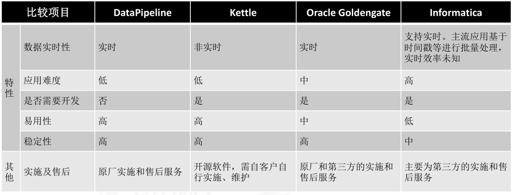
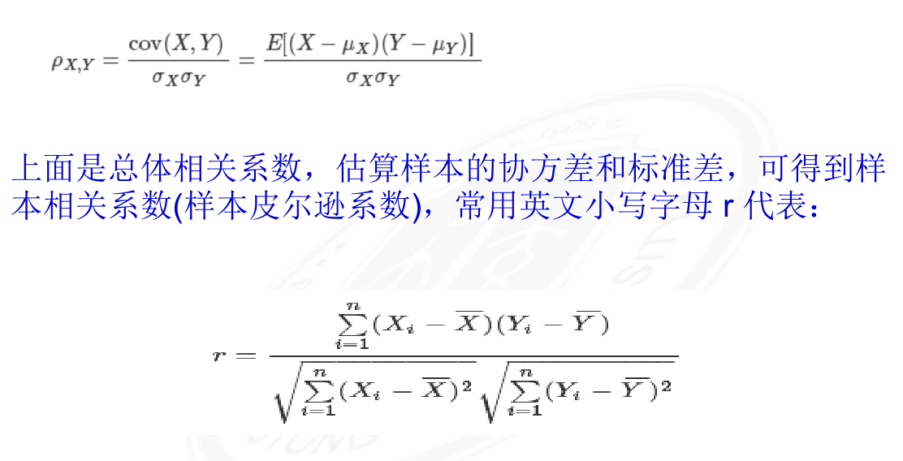
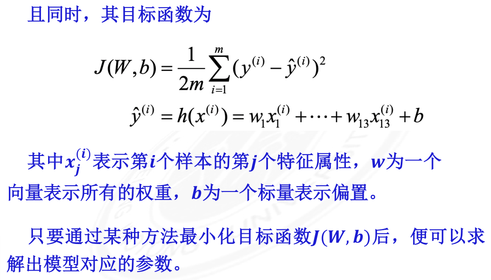
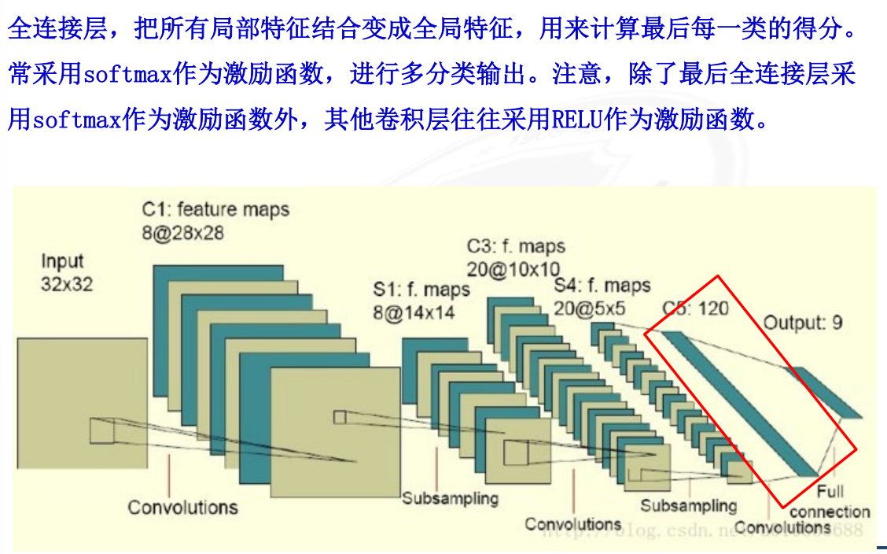

<!doctype html>
<html>
<head>
<meta charset='UTF-8'><meta name='viewport' content='width=device-width initial-scale=1'>

<link href='https://fonts.loli.net/css?family=Open+Sans:400italic,700italic,700,400&subset=latin,latin-ext' rel='stylesheet' type='text/css' /><style type='text/css'>html {overflow-x: initial !important;}:root { --bg-color:#ffffff; --text-color:#333333; --select-text-bg-color:#B5D6FC; --select-text-font-color:auto; --monospace:"Lucida Console",Consolas,"Courier",monospace; --title-bar-height:20px; }
.mac-os-11 { --title-bar-height:28px; }
html { font-size: 14px; background-color: var(--bg-color); color: var(--text-color); font-family: "Helvetica Neue", Helvetica, Arial, sans-serif; -webkit-font-smoothing: antialiased; }
body { margin: 0px; padding: 0px; height: auto; inset: 0px; font-size: 1rem; line-height: 1.42857; overflow-x: hidden; background: inherit; tab-size: 4; }
iframe { margin: auto; }
a.url { word-break: break-all; }
a:active, a:hover { outline: 0px; }
.in-text-selection, ::selection { text-shadow: none; background: var(--select-text-bg-color); color: var(--select-text-font-color); }
#write { margin: 0px auto; height: auto; width: inherit; word-break: normal; overflow-wrap: break-word; position: relative; white-space: normal; overflow-x: visible; padding-top: 36px; }
#write.first-line-indent p { text-indent: 2em; }
#write.first-line-indent li p, #write.first-line-indent p * { text-indent: 0px; }
#write.first-line-indent li { margin-left: 2em; }
.for-image #write { padding-left: 8px; padding-right: 8px; }
body.typora-export { padding-left: 30px; padding-right: 30px; }
.typora-export .footnote-line, .typora-export li, .typora-export p { white-space: pre-wrap; }
.typora-export .task-list-item input { pointer-events: none; }
@media screen and (max-width: 500px) {
  body.typora-export { padding-left: 0px; padding-right: 0px; }
  #write { padding-left: 20px; padding-right: 20px; }
  .CodeMirror-sizer { margin-left: 0px !important; }
  .CodeMirror-gutters { display: none !important; }
}
#write li > figure:last-child { margin-bottom: 0.5rem; }
#write ol, #write ul { position: relative; }
img { max-width: 100%; vertical-align: middle; image-orientation: from-image; }
button, input, select, textarea { color: inherit; font: inherit; }
input[type="checkbox"], input[type="radio"] { line-height: normal; padding: 0px; }
*, ::after, ::before { box-sizing: border-box; }
#write h1, #write h2, #write h3, #write h4, #write h5, #write h6, #write p, #write pre { width: inherit; }
#write h1, #write h2, #write h3, #write h4, #write h5, #write h6, #write p { position: relative; }
p { line-height: inherit; }
h1, h2, h3, h4, h5, h6 { break-after: avoid-page; break-inside: avoid; orphans: 4; }
p { orphans: 4; }
h1 { font-size: 2rem; }
h2 { font-size: 1.8rem; }
h3 { font-size: 1.6rem; }
h4 { font-size: 1.4rem; }
h5 { font-size: 1.2rem; }
h6 { font-size: 1rem; }
.md-math-block, .md-rawblock, h1, h2, h3, h4, h5, h6, p { margin-top: 1rem; margin-bottom: 1rem; }
.hidden { display: none; }
.md-blockmeta { color: rgb(204, 204, 204); font-weight: 700; font-style: italic; }
a { cursor: pointer; }
sup.md-footnote { padding: 2px 4px; background-color: rgba(238, 238, 238, 0.7); color: rgb(85, 85, 85); border-radius: 4px; cursor: pointer; }
sup.md-footnote a, sup.md-footnote a:hover { color: inherit; text-transform: inherit; text-decoration: inherit; }
#write input[type="checkbox"] { cursor: pointer; width: inherit; height: inherit; }
figure { overflow-x: auto; margin: 1.2em 0px; max-width: calc(100% + 16px); padding: 0px; }
figure > table { margin: 0px; }
tr { break-inside: avoid; break-after: auto; }
thead { display: table-header-group; }
table { border-collapse: collapse; border-spacing: 0px; width: 100%; overflow: auto; break-inside: auto; text-align: left; }
table.md-table td { min-width: 32px; }
.CodeMirror-gutters { border-right: 0px; background-color: inherit; }
.CodeMirror-linenumber { user-select: none; }
.CodeMirror { text-align: left; }
.CodeMirror-placeholder { opacity: 0.3; }
.CodeMirror pre { padding: 0px 4px; }
.CodeMirror-lines { padding: 0px; }
div.hr:focus { cursor: none; }
#write pre { white-space: pre-wrap; }
#write.fences-no-line-wrapping pre { white-space: pre; }
#write pre.ty-contain-cm { white-space: normal; }
.CodeMirror-gutters { margin-right: 4px; }
.md-fences { font-size: 0.9rem; display: block; break-inside: avoid; text-align: left; overflow: visible; white-space: pre; background: inherit; position: relative !important; }
.md-fences-adv-panel { width: 100%; margin-top: 10px; text-align: center; padding-top: 0px; padding-bottom: 8px; overflow-x: auto; }
#write .md-fences.mock-cm { white-space: pre-wrap; }
.md-fences.md-fences-with-lineno { padding-left: 0px; }
#write.fences-no-line-wrapping .md-fences.mock-cm { white-space: pre; overflow-x: auto; }
.md-fences.mock-cm.md-fences-with-lineno { padding-left: 8px; }
.CodeMirror-line, twitterwidget { break-inside: avoid; }
.footnotes { opacity: 0.8; font-size: 0.9rem; margin-top: 1em; margin-bottom: 1em; }
.footnotes + .footnotes { margin-top: 0px; }
.md-reset { margin: 0px; padding: 0px; border: 0px; outline: 0px; vertical-align: top; background: 0px 0px; text-decoration: none; text-shadow: none; float: none; position: static; width: auto; height: auto; white-space: nowrap; cursor: inherit; -webkit-tap-highlight-color: transparent; line-height: normal; font-weight: 400; text-align: left; box-sizing: content-box; direction: ltr; }
li div { padding-top: 0px; }
blockquote { margin: 1rem 0px; }
li .mathjax-block, li p { margin: 0.5rem 0px; }
li blockquote { margin: 1rem 0px; }
li { margin: 0px; position: relative; }
blockquote > :last-child { margin-bottom: 0px; }
blockquote > :first-child, li > :first-child { margin-top: 0px; }
.footnotes-area { color: rgb(136, 136, 136); margin-top: 0.714rem; padding-bottom: 0.143rem; white-space: normal; }
#write .footnote-line { white-space: pre-wrap; }
@media print {
  body, html { border: 1px solid transparent; height: 99%; break-after: avoid; break-before: avoid; font-variant-ligatures: no-common-ligatures; }
  #write { margin-top: 0px; padding-top: 0px; border-color: transparent !important; }
  .typora-export * { -webkit-print-color-adjust: exact; }
  .typora-export #write { break-after: avoid; }
  .typora-export #write::after { height: 0px; }
  .is-mac table { break-inside: avoid; }
  .typora-export-show-outline .typora-export-sidebar { display: none; }
}
.footnote-line { margin-top: 0.714em; font-size: 0.7em; }
a img, img a { cursor: pointer; }
pre.md-meta-block { font-size: 0.8rem; min-height: 0.8rem; white-space: pre-wrap; background: rgb(204, 204, 204); display: block; overflow-x: hidden; }
p > .md-image:only-child:not(.md-img-error) img, p > img:only-child { display: block; margin: auto; }
#write.first-line-indent p > .md-image:only-child:not(.md-img-error) img { left: -2em; position: relative; }
p > .md-image:only-child { display: inline-block; width: 100%; }
#write .MathJax_Display { margin: 0.8em 0px 0px; }
.md-math-block { width: 100%; }
.md-math-block:not(:empty)::after { display: none; }
.MathJax_ref { fill: currentcolor; }
[contenteditable="true"]:active, [contenteditable="true"]:focus, [contenteditable="false"]:active, [contenteditable="false"]:focus { outline: 0px; box-shadow: none; }
.md-task-list-item { position: relative; list-style-type: none; }
.task-list-item.md-task-list-item { padding-left: 0px; }
.md-task-list-item > input { position: absolute; top: 0px; left: 0px; margin-left: -1.2em; margin-top: calc(1em - 10px); border: none; }
.math { font-size: 1rem; }
.md-toc { min-height: 3.58rem; position: relative; font-size: 0.9rem; border-radius: 10px; }
.md-toc-content { position: relative; margin-left: 0px; }
.md-toc-content::after, .md-toc::after { display: none; }
.md-toc-item { display: block; color: rgb(65, 131, 196); }
.md-toc-item a { text-decoration: none; }
.md-toc-inner:hover { text-decoration: underline; }
.md-toc-inner { display: inline-block; cursor: pointer; }
.md-toc-h1 .md-toc-inner { margin-left: 0px; font-weight: 700; }
.md-toc-h2 .md-toc-inner { margin-left: 2em; }
.md-toc-h3 .md-toc-inner { margin-left: 4em; }
.md-toc-h4 .md-toc-inner { margin-left: 6em; }
.md-toc-h5 .md-toc-inner { margin-left: 8em; }
.md-toc-h6 .md-toc-inner { margin-left: 10em; }
@media screen and (max-width: 48em) {
  .md-toc-h3 .md-toc-inner { margin-left: 3.5em; }
  .md-toc-h4 .md-toc-inner { margin-left: 5em; }
  .md-toc-h5 .md-toc-inner { margin-left: 6.5em; }
  .md-toc-h6 .md-toc-inner { margin-left: 8em; }
}
a.md-toc-inner { font-size: inherit; font-style: inherit; font-weight: inherit; line-height: inherit; }
.footnote-line a:not(.reversefootnote) { color: inherit; }
.md-attr { display: none; }
.md-fn-count::after { content: "."; }
code, pre, samp, tt { font-family: var(--monospace); }
kbd { margin: 0px 0.1em; padding: 0.1em 0.6em; font-size: 0.8em; color: rgb(36, 39, 41); background: rgb(255, 255, 255); border: 1px solid rgb(173, 179, 185); border-radius: 3px; box-shadow: rgba(12, 13, 14, 0.2) 0px 1px 0px, rgb(255, 255, 255) 0px 0px 0px 2px inset; white-space: nowrap; vertical-align: middle; }
.md-comment { color: rgb(162, 127, 3); opacity: 0.6; font-family: var(--monospace); }
code { text-align: left; vertical-align: initial; }
a.md-print-anchor { white-space: pre !important; border-width: initial !important; border-style: none !important; border-color: initial !important; display: inline-block !important; position: absolute !important; width: 1px !important; right: 0px !important; outline: 0px !important; background: 0px 0px !important; text-decoration: initial !important; text-shadow: initial !important; }
.os-windows.monocolor-emoji .md-emoji { font-family: "Segoe UI Symbol", sans-serif; }
.md-diagram-panel > svg { max-width: 100%; }
[lang="flow"] svg, [lang="mermaid"] svg { max-width: 100%; height: auto; }
[lang="mermaid"] .node text { font-size: 1rem; }
table tr th { border-bottom: 0px; }
video { max-width: 100%; display: block; margin: 0px auto; }
iframe { max-width: 100%; width: 100%; border: none; }
.highlight td, .highlight tr { border: 0px; }
mark { background: rgb(255, 255, 0); color: rgb(0, 0, 0); }
.md-html-inline .md-plain, .md-html-inline strong, mark .md-inline-math, mark strong { color: inherit; }
.md-expand mark .md-meta { opacity: 0.3 !important; }
mark .md-meta { color: rgb(0, 0, 0); }
@media print {
  .typora-export h1, .typora-export h2, .typora-export h3, .typora-export h4, .typora-export h5, .typora-export h6 { break-inside: avoid; }
}
.md-diagram-panel .messageText { stroke: none !important; }
.md-diagram-panel .start-state { fill: var(--node-fill); }
.md-diagram-panel .edgeLabel rect { opacity: 1 !important; }
.md-fences.md-fences-math { font-size: 1em; }
.md-fences-advanced:not(.md-focus) { padding: 0px; white-space: nowrap; border: 0px; }
.md-fences-advanced:not(.md-focus) { background: inherit; }
.typora-export-show-outline .typora-export-content { max-width: 1440px; margin: auto; display: flex; flex-direction: row; }
.typora-export-sidebar { width: 300px; font-size: 0.8rem; margin-top: 80px; margin-right: 18px; }
.typora-export-show-outline #write { --webkit-flex:2; flex: 2 1 0%; }
.typora-export-sidebar .outline-content { position: fixed; top: 0px; max-height: 100%; overflow: hidden auto; padding-bottom: 30px; padding-top: 60px; width: 300px; }
@media screen and (max-width: 1024px) {
  .typora-export-sidebar, .typora-export-sidebar .outline-content { width: 240px; }
}
@media screen and (max-width: 800px) {
  .typora-export-sidebar { display: none; }
}
.outline-content li, .outline-content ul { margin-left: 0px; margin-right: 0px; padding-left: 0px; padding-right: 0px; list-style: none; }
.outline-content ul { margin-top: 0px; margin-bottom: 0px; }
.outline-content strong { font-weight: 400; }
.outline-expander { width: 1rem; height: 1.42857rem; position: relative; display: table-cell; vertical-align: middle; cursor: pointer; padding-left: 4px; }
.outline-expander::before { content: ""; position: relative; font-family: Ionicons; display: inline-block; font-size: 8px; vertical-align: middle; }
.outline-item { padding-top: 3px; padding-bottom: 3px; cursor: pointer; }
.outline-expander:hover::before { content: ""; }
.outline-h1 > .outline-item { padding-left: 0px; }
.outline-h2 > .outline-item { padding-left: 1em; }
.outline-h3 > .outline-item { padding-left: 2em; }
.outline-h4 > .outline-item { padding-left: 3em; }
.outline-h5 > .outline-item { padding-left: 4em; }
.outline-h6 > .outline-item { padding-left: 5em; }
.outline-label { cursor: pointer; display: table-cell; vertical-align: middle; text-decoration: none; color: inherit; }
.outline-label:hover { text-decoration: underline; }
.outline-item:hover { border-color: rgb(245, 245, 245); background-color: var(--item-hover-bg-color); }
.outline-item:hover { margin-left: -28px; margin-right: -28px; border-left: 28px solid transparent; border-right: 28px solid transparent; }
.outline-item-single .outline-expander::before, .outline-item-single .outline-expander:hover::before { display: none; }
.outline-item-open > .outline-item > .outline-expander::before { content: ""; }
.outline-children { display: none; }
.info-panel-tab-wrapper { display: none; }
.outline-item-open > .outline-children { display: block; }
.typora-export .outline-item { padding-top: 1px; padding-bottom: 1px; }
.typora-export .outline-item:hover { margin-right: -8px; border-right: 8px solid transparent; }
.typora-export .outline-expander::before { content: "+"; font-family: inherit; top: -1px; }
.typora-export .outline-expander:hover::before, .typora-export .outline-item-open > .outline-item > .outline-expander::before { content: "−"; }
.typora-export-collapse-outline .outline-children { display: none; }
.typora-export-collapse-outline .outline-item-open > .outline-children, .typora-export-no-collapse-outline .outline-children { display: block; }
.typora-export-no-collapse-outline .outline-expander::before { content: "" !important; }
.typora-export-show-outline .outline-item-active > .outline-item .outline-label { font-weight: 700; }
.md-inline-math-container mjx-container { zoom: 0.95; }


:root {
    --side-bar-bg-color: #fafafa;
    --control-text-color: #777;
}

@include-when-export url(https://fonts.loli.net/css?family=Open+Sans:400italic,700italic,700,400&subset=latin,latin-ext);

/* open-sans-regular - latin-ext_latin */
  /* open-sans-italic - latin-ext_latin */
    /* open-sans-700 - latin-ext_latin */
    /* open-sans-700italic - latin-ext_latin */
  html {
    font-size: 16px;
    -webkit-font-smoothing: antialiased;
}

body {
    font-family: "Open Sans","Clear Sans", "Helvetica Neue", Helvetica, Arial, 'Segoe UI Emoji', sans-serif;
    color: rgb(51, 51, 51);
    line-height: 1.6;
}

#write {
    max-width: 860px;
  	margin: 0 auto;
  	padding: 30px;
    padding-bottom: 100px;
}

@media only screen and (min-width: 1400px) {
	#write {
		max-width: 1024px;
	}
}

@media only screen and (min-width: 1800px) {
	#write {
		max-width: 1200px;
	}
}

#write > ul:first-child,
#write > ol:first-child{
    margin-top: 30px;
}

a {
    color: #4183C4;
}
h1,
h2,
h3,
h4,
h5,
h6 {
    position: relative;
    margin-top: 1rem;
    margin-bottom: 1rem;
    font-weight: bold;
    line-height: 1.4;
    cursor: text;
}
h1:hover a.anchor,
h2:hover a.anchor,
h3:hover a.anchor,
h4:hover a.anchor,
h5:hover a.anchor,
h6:hover a.anchor {
    text-decoration: none;
}
h1 tt,
h1 code {
    font-size: inherit;
}
h2 tt,
h2 code {
    font-size: inherit;
}
h3 tt,
h3 code {
    font-size: inherit;
}
h4 tt,
h4 code {
    font-size: inherit;
}
h5 tt,
h5 code {
    font-size: inherit;
}
h6 tt,
h6 code {
    font-size: inherit;
}
h1 {
    font-size: 2.25em;
    line-height: 1.2;
    border-bottom: 1px solid #eee;
}
h2 {
    font-size: 1.75em;
    line-height: 1.225;
    border-bottom: 1px solid #eee;
}

/*@media print {
    .typora-export h1,
    .typora-export h2 {
        border-bottom: none;
        padding-bottom: initial;
    }

    .typora-export h1::after,
    .typora-export h2::after {
        content: "";
        display: block;
        height: 100px;
        margin-top: -96px;
        border-top: 1px solid #eee;
    }
}*/

h3 {
    font-size: 1.5em;
    line-height: 1.43;
}
h4 {
    font-size: 1.25em;
}
h5 {
    font-size: 1em;
}
h6 {
   font-size: 1em;
    color: #777;
}
p,
blockquote,
ul,
ol,
dl,
table{
    margin: 0.8em 0;
}
li>ol,
li>ul {
    margin: 0 0;
}
hr {
    height: 2px;
    padding: 0;
    margin: 16px 0;
    background-color: #e7e7e7;
    border: 0 none;
    overflow: hidden;
    box-sizing: content-box;
}

li p.first {
    display: inline-block;
}
ul,
ol {
    padding-left: 30px;
}
ul:first-child,
ol:first-child {
    margin-top: 0;
}
ul:last-child,
ol:last-child {
    margin-bottom: 0;
}
blockquote {
    border-left: 4px solid #dfe2e5;
    padding: 0 15px;
    color: #777777;
}
blockquote blockquote {
    padding-right: 0;
}
table {
    padding: 0;
    word-break: initial;
}
table tr {
    border: 1px solid #dfe2e5;
    margin: 0;
    padding: 0;
}
table tr:nth-child(2n),
thead {
    background-color: #f8f8f8;
}
table th {
    font-weight: bold;
    border: 1px solid #dfe2e5;
    border-bottom: 0;
    margin: 0;
    padding: 6px 13px;
}
table td {
    border: 1px solid #dfe2e5;
    margin: 0;
    padding: 6px 13px;
}
table th:first-child,
table td:first-child {
    margin-top: 0;
}
table th:last-child,
table td:last-child {
    margin-bottom: 0;
}

.CodeMirror-lines {
    padding-left: 4px;
}

.code-tooltip {
    box-shadow: 0 1px 1px 0 rgba(0,28,36,.3);
    border-top: 1px solid #eef2f2;
}

.md-fences,
code,
tt {
    border: 1px solid #e7eaed;
    background-color: #f8f8f8;
    border-radius: 3px;
    padding: 0;
    padding: 2px 4px 0px 4px;
    font-size: 0.9em;
}

code {
    background-color: #f3f4f4;
    padding: 0 2px 0 2px;
}

.md-fences {
    margin-bottom: 15px;
    margin-top: 15px;
    padding-top: 8px;
    padding-bottom: 6px;
}


.md-task-list-item > input {
  margin-left: -1.3em;
}

@media print {
    html {
        font-size: 13px;
    }
    table,
    pre {
        page-break-inside: avoid;
    }
    pre {
        word-wrap: break-word;
    }
}

.md-fences {
	background-color: #f8f8f8;
}
#write pre.md-meta-block {
	padding: 1rem;
    font-size: 85%;
    line-height: 1.45;
    background-color: #f7f7f7;
    border: 0;
    border-radius: 3px;
    color: #777777;
    margin-top: 0 !important;
}

.mathjax-block>.code-tooltip {
	bottom: .375rem;
}

.md-mathjax-midline {
    background: #fafafa;
}

#write>h3.md-focus:before{
	left: -1.5625rem;
	top: .375rem;
}
#write>h4.md-focus:before{
	left: -1.5625rem;
	top: .285714286rem;
}
#write>h5.md-focus:before{
	left: -1.5625rem;
	top: .285714286rem;
}
#write>h6.md-focus:before{
	left: -1.5625rem;
	top: .285714286rem;
}
.md-image>.md-meta {
    /*border: 1px solid #ddd;*/
    border-radius: 3px;
    padding: 2px 0px 0px 4px;
    font-size: 0.9em;
    color: inherit;
}

.md-tag {
    color: #a7a7a7;
    opacity: 1;
}

.md-toc { 
    margin-top:20px;
    padding-bottom:20px;
}

.sidebar-tabs {
    border-bottom: none;
}

#typora-quick-open {
    border: 1px solid #ddd;
    background-color: #f8f8f8;
}

#typora-quick-open-item {
    background-color: #FAFAFA;
    border-color: #FEFEFE #e5e5e5 #e5e5e5 #eee;
    border-style: solid;
    border-width: 1px;
}

/** focus mode */
.on-focus-mode blockquote {
    border-left-color: rgba(85, 85, 85, 0.12);
}

header, .context-menu, .megamenu-content, footer{
    font-family: "Segoe UI", "Arial", sans-serif;
}

.file-node-content:hover .file-node-icon,
.file-node-content:hover .file-node-open-state{
    visibility: visible;
}

.mac-seamless-mode #typora-sidebar {
    background-color: #fafafa;
    background-color: var(--side-bar-bg-color);
}

.md-lang {
    color: #b4654d;
}

/*.html-for-mac {
    --item-hover-bg-color: #E6F0FE;
}*/

#md-notification .btn {
    border: 0;
}

.dropdown-menu .divider {
    border-color: #e5e5e5;
    opacity: 0.4;
}

.ty-preferences .window-content {
    background-color: #fafafa;
}

.ty-preferences .nav-group-item.active {
    color: white;
    background: #999;
}

.menu-item-container a.menu-style-btn {
    background-color: #f5f8fa;
    background-image: linear-gradient( 180deg , hsla(0, 0%, 100%, 0.8), hsla(0, 0%, 100%, 0)); 
}


</style><title>大数据概论期末复习笔记</title>
</head>
<body class='typora-export os-windows'><div class='typora-export-content'>
<div id='write'  class=''><div class='md-toc' mdtype='toc'><p class="md-toc-content" role="list"><span role="listitem" class="md-toc-item md-toc-h1" data-ref="n3"><a class="md-toc-inner" href="#1绪论">1.绪论</a></span><span role="listitem" class="md-toc-item md-toc-h2" data-ref="n4"><a class="md-toc-inner" href="#1概述-1">1.概述</a></span><span role="listitem" class="md-toc-item md-toc-h2" data-ref="n7"><a class="md-toc-inner" href="#2大数据的内涵和外延">2.大数据的内涵和外延</a></span><span role="listitem" class="md-toc-item md-toc-h2" data-ref="n9"><a class="md-toc-inner" href="#3技术挑战和科学意义">3.技术挑战和科学意义</a></span><span role="listitem" class="md-toc-item md-toc-h3" data-ref="n10"><a class="md-toc-inner" href="#1数据的一般处理过程">1.数据的一般处理过程</a></span><span role="listitem" class="md-toc-item md-toc-h2" data-ref="n12"><a class="md-toc-inner" href="#4数据科学">4.数据科学</a></span><span role="listitem" class="md-toc-item md-toc-h1" data-ref="n13"><a class="md-toc-inner" href="#2大数据基本概念">2.大数据基本概念</a></span><span role="listitem" class="md-toc-item md-toc-h2" data-ref="n14"><a class="md-toc-inner" href="#1大数据的概念">1.大数据的概念</a></span><span role="listitem" class="md-toc-item md-toc-h2" data-ref="n16"><a class="md-toc-inner" href="#2大数据的来源">2.大数据的来源</a></span><span role="listitem" class="md-toc-item md-toc-h2" data-ref="n19"><a class="md-toc-inner" href="#3大数据的特征及意义">3.大数据的特征及意义</a></span><span role="listitem" class="md-toc-item md-toc-h2" data-ref="n23"><a class="md-toc-inner" href="#4大数据的表现形态">4.大数据的表现形态</a></span><span role="listitem" class="md-toc-item md-toc-h2" data-ref="n25"><a class="md-toc-inner" href="#5大数据的应用场景">5.大数据的应用场景</a></span><span role="listitem" class="md-toc-item md-toc-h1" data-ref="n27"><a class="md-toc-inner" href="#3大数据感知与获取">3.大数据感知与获取</a></span><span role="listitem" class="md-toc-item md-toc-h2" data-ref="n29"><a class="md-toc-inner" href="#1大数据获取">1.大数据获取</a></span><span role="listitem" class="md-toc-item md-toc-h3" data-ref="n30"><a class="md-toc-inner" href="#1行业企业内数据">1.行业/企业内数据</a></span><span role="listitem" class="md-toc-item md-toc-h4" data-ref="n32"><a class="md-toc-inner" href="#1etl-抽取">1.ETL-抽取</a></span><span role="listitem" class="md-toc-item md-toc-h4" data-ref="n34"><a class="md-toc-inner" href="#2etl-转化和加工">2.ETL-转化和加工</a></span><span role="listitem" class="md-toc-item md-toc-h4" data-ref="n37"><a class="md-toc-inner" href="#3数据清洗">3.数据清洗</a></span><span role="listitem" class="md-toc-item md-toc-h4" data-ref="n39"><a class="md-toc-inner" href="#4etl-加载">4.ETL-加载</a></span><span role="listitem" class="md-toc-item md-toc-h4" data-ref="n41"><a class="md-toc-inner" href="#5etl常用工具">5.ETL常用工具</a></span><span role="listitem" class="md-toc-item md-toc-h3" data-ref="n45"><a class="md-toc-inner" href="#2互联网数据">2.互联网数据</a></span><span role="listitem" class="md-toc-item md-toc-h4" data-ref="n46"><a class="md-toc-inner" href="#1互联网数据特性">1.互联网数据特性</a></span><span role="listitem" class="md-toc-item md-toc-h4" data-ref="n48"><a class="md-toc-inner" href="#2网络爬虫">2.网络爬虫</a></span><span role="listitem" class="md-toc-item md-toc-h3" data-ref="n55"><a class="md-toc-inner" href="#3物联网数据">3.物联网数据</a></span><span role="listitem" class="md-toc-item md-toc-h4" data-ref="n57"><a class="md-toc-inner" href="#1物联网大数据获取------rfid">1.物联网大数据获取——RFID</a></span><span role="listitem" class="md-toc-item md-toc-h4" data-ref="n59"><a class="md-toc-inner" href="#2物联网大数据获取------传感器">2.物联网大数据获取——传感器</a></span><span role="listitem" class="md-toc-item md-toc-h1" data-ref="n61"><a class="md-toc-inner" href="#4数据管理">4.数据管理</a></span><span role="listitem" class="md-toc-item md-toc-h2" data-ref="n62"><a class="md-toc-inner" href="#1数据管理概述">1.数据管理概述</a></span><span role="listitem" class="md-toc-item md-toc-h2" data-ref="n64"><a class="md-toc-inner" href="#2关系数据库">2.关系数据库</a></span><span role="listitem" class="md-toc-item md-toc-h2" data-ref="n67"><a class="md-toc-inner" href="#3分布式文件系统">3.分布式文件系统</a></span><span role="listitem" class="md-toc-item md-toc-h3" data-ref="n71"><a class="md-toc-inner" href="#1hadoop-分布式文件系统-hdfs）">1.Hadoop 分布式文件系统（ HDFS）： </a></span><span role="listitem" class="md-toc-item md-toc-h3" data-ref="n78"><a class="md-toc-inner" href="#2ceph">2.Ceph</a></span><span role="listitem" class="md-toc-item md-toc-h3" data-ref="n82"><a class="md-toc-inner" href="#3glusterfs">3.GlusterFs</a></span><span role="listitem" class="md-toc-item md-toc-h3" data-ref="n87"><a class="md-toc-inner" href="#4对比">4.对比</a></span><span role="listitem" class="md-toc-item md-toc-h2" data-ref="n89"><a class="md-toc-inner" href="#4新型数据管理与查询系统">4.新型数据管理与查询系统</a></span><span role="listitem" class="md-toc-item md-toc-h3" data-ref="n90"><a class="md-toc-inner" href="#1nosql数据库">1.NoSQL数据库</a></span><span role="listitem" class="md-toc-item md-toc-h3" data-ref="n93"><a class="md-toc-inner" href="#2sql-on-hadoop系统">2.SQL on Hadoop系统</a></span><span role="listitem" class="md-toc-item md-toc-h4" data-ref="n96"><a class="md-toc-inner" href="#1hive">1.Hive</a></span><span role="listitem" class="md-toc-item md-toc-h4" data-ref="n98"><a class="md-toc-inner" href="#2impala">2.Impala</a></span><span role="listitem" class="md-toc-item md-toc-h4" data-ref="n100"><a class="md-toc-inner" href="#3spark-sql">3.Spark SQL</a></span><span role="listitem" class="md-toc-item md-toc-h1" data-ref="n102"><a class="md-toc-inner" href="#51数据理解与特征工程">5.1数据理解与特征工程</a></span><span role="listitem" class="md-toc-item md-toc-h2" data-ref="n103"><a class="md-toc-inner" href="#1数据类型">1.数据类型</a></span><span role="listitem" class="md-toc-item md-toc-h3" data-ref="n105"><a class="md-toc-inner" href="#1数据集的特征">1.数据集的特征</a></span><span role="listitem" class="md-toc-item md-toc-h3" data-ref="n107"><a class="md-toc-inner" href="#2数据集的类别">2.数据集的类别</a></span><span role="listitem" class="md-toc-item md-toc-h2" data-ref="n111"><a class="md-toc-inner" href="#2数据规范">2.数据规范</a></span><span role="listitem" class="md-toc-item md-toc-h2" data-ref="n116"><a class="md-toc-inner" href="#3度量方法">3.度量方法</a></span><span role="listitem" class="md-toc-item md-toc-h4" data-ref="n119"><a class="md-toc-inner" href="#1距离">1.距离</a></span><span role="listitem" class="md-toc-item md-toc-h5" data-ref="n120"><a class="md-toc-inner" href="#1欧氏距离">1.欧氏距离</a></span><span role="listitem" class="md-toc-item md-toc-h5" data-ref="n122"><a class="md-toc-inner" href="#2曼哈顿距离">2.曼哈顿距离</a></span><span role="listitem" class="md-toc-item md-toc-h5" data-ref="n124"><a class="md-toc-inner" href="#3切比雪夫距离">3.切比雪夫距离</a></span><span role="listitem" class="md-toc-item md-toc-h5" data-ref="n126"><a class="md-toc-inner" href="#4马式距离">4.马式距离</a></span><span role="listitem" class="md-toc-item md-toc-h4" data-ref="n128"><a class="md-toc-inner" href="#2相似度度量">2.相似度度量</a></span><span role="listitem" class="md-toc-item md-toc-h5" data-ref="n130"><a class="md-toc-inner" href="#1余弦相似度">1.余弦相似度</a></span><span role="listitem" class="md-toc-item md-toc-h5" data-ref="n133"><a class="md-toc-inner" href="#2皮尔森相关系数">2.皮尔森相关系数</a></span><span role="listitem" class="md-toc-item md-toc-h5" data-ref="n136"><a class="md-toc-inner" href="#3jaccard相似系数">3.Jaccard相似系数</a></span><span role="listitem" class="md-toc-item md-toc-h2" data-ref="n138"><a class="md-toc-inner" href="#4特征工程">4.特征工程</a></span><span role="listitem" class="md-toc-item md-toc-h3" data-ref="n140"><a class="md-toc-inner" href="#1特征表示">1.特征表示</a></span><span role="listitem" class="md-toc-item md-toc-h3" data-ref="n142"><a class="md-toc-inner" href="#2特征构造">2.特征构造</a></span><span role="listitem" class="md-toc-item md-toc-h4" data-ref="n143"><a class="md-toc-inner" href="#1聚合特征构造">1.聚合特征构造</a></span><span role="listitem" class="md-toc-item md-toc-h4" data-ref="n145"><a class="md-toc-inner" href="#2转换特征构造">2.转换特征构造</a></span><span role="listitem" class="md-toc-item md-toc-h3" data-ref="n147"><a class="md-toc-inner" href="#3特征提取">3.特征提取</a></span><span role="listitem" class="md-toc-item md-toc-h4" data-ref="n150"><a class="md-toc-inner" href="#1降维">1.降维</a></span><span role="listitem" class="md-toc-item md-toc-h5" data-ref="n151"><a class="md-toc-inner" href="#1pca">1.PCA</a></span><span role="listitem" class="md-toc-item md-toc-h5" data-ref="n153"><a class="md-toc-inner" href="#2ica">2.ICA</a></span><span role="listitem" class="md-toc-item md-toc-h4" data-ref="n155"><a class="md-toc-inner" href="#2图像">2.图像</a></span><span role="listitem" class="md-toc-item md-toc-h5" data-ref="n156"><a class="md-toc-inner" href="#1sift特征">1.SIFT特征</a></span><span role="listitem" class="md-toc-item md-toc-h5" data-ref="n158"><a class="md-toc-inner" href="#2hog特征">2.HOG特征</a></span><span role="listitem" class="md-toc-item md-toc-h4" data-ref="n160"><a class="md-toc-inner" href="#3文本">3.文本</a></span><span role="listitem" class="md-toc-item md-toc-h5" data-ref="n161"><a class="md-toc-inner" href="#1词袋模型">1.词袋模型</a></span><span role="listitem" class="md-toc-item md-toc-h5" data-ref="n163"><a class="md-toc-inner" href="#2n-gram模型">2.N-gram模型</a></span><span role="listitem" class="md-toc-item md-toc-h3" data-ref="n165"><a class="md-toc-inner" href="#4特征选择">4.特征选择</a></span><span role="listitem" class="md-toc-item md-toc-h1" data-ref="n169"><a class="md-toc-inner" href="#52常用数据挖掘算法">5.2常用数据挖掘算法</a></span><span role="listitem" class="md-toc-item md-toc-h2" data-ref="n170"><a class="md-toc-inner" href="#1机器学习">1.机器学习</a></span><span role="listitem" class="md-toc-item md-toc-h2" data-ref="n172"><a class="md-toc-inner" href="#2非监督学习-关联规则挖掘聚类分析">2.非监督学习-关联规则挖掘&amp;聚类分析</a></span><span role="listitem" class="md-toc-item md-toc-h3" data-ref="n173"><a class="md-toc-inner" href="#1关联规则挖掘基本概念">1.关联规则挖掘基本概念</a></span><span role="listitem" class="md-toc-item md-toc-h4" data-ref="n179"><a class="md-toc-inner" href="#1-项-item-）项集-itemset-）k--项集与事务">1 项（ Item ）、项集（ Itemset ）、k- 项集与事务</a></span><span role="listitem" class="md-toc-item md-toc-h4" data-ref="n181"><a class="md-toc-inner" href="#2-频繁项集-frequent-itemset-）">2 频繁项集（ Frequent Itemset ）</a></span><span role="listitem" class="md-toc-item md-toc-h4" data-ref="n183"><a class="md-toc-inner" href="#3-极大频繁项集-frequent-large-itemset-）">3 极大频繁项集（ Frequent Large Itemset ）</a></span><span role="listitem" class="md-toc-item md-toc-h4" data-ref="n185"><a class="md-toc-inner" href="#4-支持度-support-）">4 支持度（ Support ）</a></span><span role="listitem" class="md-toc-item md-toc-h4" data-ref="n187"><a class="md-toc-inner" href="#5-置信度-confidence-）">5 置信度（ Confidence ）</a></span><span role="listitem" class="md-toc-item md-toc-h3" data-ref="n189"><a class="md-toc-inner" href="#2关联规则的挖掘过程">2.关联规则的挖掘过程</a></span><span role="listitem" class="md-toc-item md-toc-h3" data-ref="n196"><a class="md-toc-inner" href="#3关联规则的apriori算法">3.关联规则的Apriori算法</a></span><span role="listitem" class="md-toc-item md-toc-h4" data-ref="n200"><a class="md-toc-inner" href="#1-连接步">1 连接步 </a></span><span role="listitem" class="md-toc-item md-toc-h4" data-ref="n202"><a class="md-toc-inner" href="#2-剪枝步">2 剪枝步</a></span><span role="listitem" class="md-toc-item md-toc-h4" data-ref="n204"><a class="md-toc-inner" href="#3-步骤三">3 步骤三</a></span><span role="listitem" class="md-toc-item md-toc-h3" data-ref="n207"><a class="md-toc-inner" href="#4聚类分析">4.聚类分析</a></span><span role="listitem" class="md-toc-item md-toc-h3" data-ref="n210"><a class="md-toc-inner" href="#5k-means算法原理">5.k-means算法原理</a></span><span role="listitem" class="md-toc-item md-toc-h3" data-ref="n214"><a class="md-toc-inner" href="#6k-means算法求解">6.k-means算法求解</a></span><span role="listitem" class="md-toc-item md-toc-h3" data-ref="n219"><a class="md-toc-inner" href="#7聚类评估指标">7.聚类评估指标</a></span><span role="listitem" class="md-toc-item md-toc-h2" data-ref="n224"><a class="md-toc-inner" href="#3监督学习-回归分类">3.监督学习-回归&amp;分类</a></span><span role="listitem" class="md-toc-item md-toc-h3" data-ref="n225"><a class="md-toc-inner" href="#1线性回归">1.线性回归</a></span><span role="listitem" class="md-toc-item md-toc-h4" data-ref="n226"><a class="md-toc-inner" href="#1线性回归模型建立">1.线性回归模型建立</a></span><span role="listitem" class="md-toc-item md-toc-h4" data-ref="n232"><a class="md-toc-inner" href="#2梯度下降算法求解">2.梯度下降算法求解</a></span><span role="listitem" class="md-toc-item md-toc-h4" data-ref="n236"><a class="md-toc-inner" href="#3回归模型评估">3.回归模型评估</a></span><span role="listitem" class="md-toc-item md-toc-h4" data-ref="n241"><a class="md-toc-inner" href="#4回归模型非线性变化">4.回归模型非线性变化</a></span><span role="listitem" class="md-toc-item md-toc-h3" data-ref="n249"><a class="md-toc-inner" href="#2logistic回归">2.Logistic回归</a></span><span role="listitem" class="md-toc-item md-toc-h4" data-ref="n251"><a class="md-toc-inner" href="#1模型建立">1.模型建立</a></span><span role="listitem" class="md-toc-item md-toc-h4" data-ref="n255"><a class="md-toc-inner" href="#2模型求解">2.模型求解</a></span><span role="listitem" class="md-toc-item md-toc-h4" data-ref="n258"><a class="md-toc-inner" href="#3模型评估">3.模型评估</a></span><span role="listitem" class="md-toc-item md-toc-h3" data-ref="n260"><a class="md-toc-inner" href="#3knn最近邻算法）">3.KNN（最近邻算法）</a></span><span role="listitem" class="md-toc-item md-toc-h3" data-ref="n266"><a class="md-toc-inner" href="#4朴素贝叶斯">4.朴素贝叶斯</a></span><span role="listitem" class="md-toc-item md-toc-h4" data-ref="n268"><a class="md-toc-inner" href="#1朴素贝叶斯概念">1.朴素贝叶斯概念</a></span><span role="listitem" class="md-toc-item md-toc-h4" data-ref="n274"><a class="md-toc-inner" href="#2理解朴素贝叶斯">2.理解朴素贝叶斯</a></span><span role="listitem" class="md-toc-item md-toc-h4" data-ref="n278"><a class="md-toc-inner" href="#3计算实例">3.计算实例</a></span><span role="listitem" class="md-toc-item md-toc-h1" data-ref="n284"><a class="md-toc-inner" href="#53深度学习简介">5.3深度学习简介</a></span><span role="listitem" class="md-toc-item md-toc-h2" data-ref="n285"><a class="md-toc-inner" href="#1从人工神经网络到深度神经网络">1.从人工神经网络到深度神经网络</a></span><span role="listitem" class="md-toc-item md-toc-h2" data-ref="n290"><a class="md-toc-inner" href="#2卷积神经网络的若干改进">2.卷积神经网络的若干改进</a></span><span role="listitem" class="md-toc-item md-toc-h3" data-ref="n292"><a class="md-toc-inner" href="#1输入层">1.输入层</a></span><span role="listitem" class="md-toc-item md-toc-h3" data-ref="n294"><a class="md-toc-inner" href="#2卷积层">2.卷积层</a></span><span role="listitem" class="md-toc-item md-toc-h3" data-ref="n296"><a class="md-toc-inner" href="#3参数共享">3.参数共享</a></span><span role="listitem" class="md-toc-item md-toc-h3" data-ref="n298"><a class="md-toc-inner" href="#4稀疏连接">4.稀疏连接</a></span><span role="listitem" class="md-toc-item md-toc-h3" data-ref="n300"><a class="md-toc-inner" href="#5池化层">5.池化层</a></span><span role="listitem" class="md-toc-item md-toc-h3" data-ref="n302"><a class="md-toc-inner" href="#6全连接层">6.全连接层</a></span><span role="listitem" class="md-toc-item md-toc-h3" data-ref="n304"><a class="md-toc-inner" href="#7输出层">7.输出层</a></span><span role="listitem" class="md-toc-item md-toc-h2" data-ref="n308"><a class="md-toc-inner" href="#3循环神经网络若干改进">3.循环神经网络若干改进</a></span><span role="listitem" class="md-toc-item md-toc-h3" data-ref="n309"><a class="md-toc-inner" href="#1rnn">1.RNN</a></span><span role="listitem" class="md-toc-item md-toc-h3" data-ref="n314"><a class="md-toc-inner" href="#2lstm">2.LSTM</a></span><span role="listitem" class="md-toc-item md-toc-h4" data-ref="n317"><a class="md-toc-inner" href="#1忘记门">1.忘记门</a></span><span role="listitem" class="md-toc-item md-toc-h4" data-ref="n319"><a class="md-toc-inner" href="#2输入门">2.输入门</a></span><span role="listitem" class="md-toc-item md-toc-h4" data-ref="n321"><a class="md-toc-inner" href="#3输出门">3.输出门</a></span><span role="listitem" class="md-toc-item md-toc-h4" data-ref="n323"><a class="md-toc-inner" href="#4细胞更新">4.细胞更新</a></span><span role="listitem" class="md-toc-item md-toc-h2" data-ref="n326"><a class="md-toc-inner" href="#4生成式对抗神经网络">4.生成式对抗神经网络</a></span><span role="listitem" class="md-toc-item md-toc-h1" data-ref="n332"><a class="md-toc-inner" href="#54数据可视化">5.4数据可视化</a></span><span role="listitem" class="md-toc-item md-toc-h2" data-ref="n333"><a class="md-toc-inner" href="#1大数据可视化概述">1.大数据可视化概述</a></span><span role="listitem" class="md-toc-item md-toc-h3" data-ref="n334"><a class="md-toc-inner" href="#1定义">1.定义</a></span><span role="listitem" class="md-toc-item md-toc-h3" data-ref="n337"><a class="md-toc-inner" href="#2可视化的重要作用">2.可视化的重要作用</a></span><span role="listitem" class="md-toc-item md-toc-h2" data-ref="n339"><a class="md-toc-inner" href="#2大数据可视化方法与技术">2.大数据可视化方法与技术</a></span><span role="listitem" class="md-toc-item md-toc-h3" data-ref="n340"><a class="md-toc-inner" href="#1文本可视化">1.文本可视化</a></span><span role="listitem" class="md-toc-item md-toc-h3" data-ref="n343"><a class="md-toc-inner" href="#2网络图）可视化">2.网络（图）可视化</a></span><span role="listitem" class="md-toc-item md-toc-h3" data-ref="n345"><a class="md-toc-inner" href="#3时空数据可视化">3.时空数据可视化</a></span><span role="listitem" class="md-toc-item md-toc-h3" data-ref="n348"><a class="md-toc-inner" href="#4多维数据可视化">4.多维数据可视化</a></span><span role="listitem" class="md-toc-item md-toc-h2" data-ref="n355"><a class="md-toc-inner" href="#3可视化工具">3.可视化工具</a></span><span role="listitem" class="md-toc-item md-toc-h1" data-ref="n361"><a class="md-toc-inner" href="#61集中式分部计算架构">6.1集中式分部计算架构</a></span><span role="listitem" class="md-toc-item md-toc-h2" data-ref="n362"><a class="md-toc-inner" href="#1大型主机的特点和优势">1.大型主机的特点和优势</a></span><span role="listitem" class="md-toc-item md-toc-h3" data-ref="n364"><a class="md-toc-inner" href="#1ras冗余设计">1.RAS冗余设计</a></span><span role="listitem" class="md-toc-item md-toc-h3" data-ref="n366"><a class="md-toc-inner" href="#2	io吞吐量">2.<span>	</span>I/O吞吐量</a></span><span role="listitem" class="md-toc-item md-toc-h3" data-ref="n368"><a class="md-toc-inner" href="#3isa系统指令架构">3.ISA系统指令架构</a></span><span role="listitem" class="md-toc-item md-toc-h2" data-ref="n370"><a class="md-toc-inner" href="#2大型主机所面临的问题">2.大型主机所面临的问题</a></span><span role="listitem" class="md-toc-item md-toc-h2" data-ref="n372"><a class="md-toc-inner" href="#3超级计算机的发展历史">3.超级计算机的发展历史</a></span><span role="listitem" class="md-toc-item md-toc-h2" data-ref="n375"><a class="md-toc-inner" href="#4大数据对超级计算机提出的挑战">4.大数据对超级计算机提出的挑战</a></span><span role="listitem" class="md-toc-item md-toc-h1" data-ref="n377"><a class="md-toc-inner" href="#62分布式计算架构------mapreduce">6.2分布式计算架构——MapReduce</a></span><span role="listitem" class="md-toc-item md-toc-h2" data-ref="n378"><a class="md-toc-inner" href="#1概述-2">1.概述</a></span><span role="listitem" class="md-toc-item md-toc-h3" data-ref="n379"><a class="md-toc-inner" href="#1分布式并行编程">1.分布式并行编程</a></span><span role="listitem" class="md-toc-item md-toc-h3" data-ref="n382"><a class="md-toc-inner" href="#2mapreduce模型简介">2.MapReduce模型简介</a></span><span role="listitem" class="md-toc-item md-toc-h3" data-ref="n384"><a class="md-toc-inner" href="#3map和reduce函数">3.Map和Reduce函数</a></span><span role="listitem" class="md-toc-item md-toc-h2" data-ref="n386"><a class="md-toc-inner" href="#2mapreduce体系结构">2.MapReduce体系结构</a></span><span role="listitem" class="md-toc-item md-toc-h2" data-ref="n394"><a class="md-toc-inner" href="#3mapreduce工作流程">3.MapReduce工作流程</a></span><span role="listitem" class="md-toc-item md-toc-h3" data-ref="n395"><a class="md-toc-inner" href="#1工作流程概述">1.工作流程概述</a></span><span role="listitem" class="md-toc-item md-toc-h3" data-ref="n397"><a class="md-toc-inner" href="#2mapreduce各个执行阶段">2.MapReduce各个执行阶段</a></span><span role="listitem" class="md-toc-item md-toc-h3" data-ref="n402"><a class="md-toc-inner" href="#3shuffle过程详解">3.Shuffle过程详解</a></span><span role="listitem" class="md-toc-item md-toc-h2" data-ref="n409"><a class="md-toc-inner" href="#4实例分析wordcount">4.实例分析：WordCount</a></span><span role="listitem" class="md-toc-item md-toc-h3" data-ref="n410"><a class="md-toc-inner" href="#1wordcount程序任务">1.WordCount程序任务</a></span><span role="listitem" class="md-toc-item md-toc-h3" data-ref="n412"><a class="md-toc-inner" href="#2wordcount设计思路">2.WordCount设计思路</a></span><span role="listitem" class="md-toc-item md-toc-h3" data-ref="n416"><a class="md-toc-inner" href="#3一个wordcount执行过程的实例">3.一个WordCount执行过程的实例</a></span><span role="listitem" class="md-toc-item md-toc-h1" data-ref="n420"><a class="md-toc-inner" href="#63分布式计算架构------hdfs">6.3分布式计算架构——HDFS</a></span><span role="listitem" class="md-toc-item md-toc-h2" data-ref="n421"><a class="md-toc-inner" href="#1分布式文件系统">1.分布式文件系统</a></span><span role="listitem" class="md-toc-item md-toc-h3" data-ref="n422"><a class="md-toc-inner" href="#1计算机集群结构">1.计算机集群结构</a></span><span role="listitem" class="md-toc-item md-toc-h3" data-ref="n424"><a class="md-toc-inner" href="#2分布式文件系统的结构">2.分布式文件系统的结构</a></span><span role="listitem" class="md-toc-item md-toc-h2" data-ref="n426"><a class="md-toc-inner" href="#2hdfs简介">2.HDFS简介</a></span><span role="listitem" class="md-toc-item md-toc-h2" data-ref="n429"><a class="md-toc-inner" href="#3hdfs相关概念">3.HDFS相关概念</a></span><span role="listitem" class="md-toc-item md-toc-h3" data-ref="n430"><a class="md-toc-inner" href="#1块">1.块</a></span><span role="listitem" class="md-toc-item md-toc-h3" data-ref="n433"><a class="md-toc-inner" href="#2名称节点和数据节点">2.名称节点和数据节点</a></span><span role="listitem" class="md-toc-item md-toc-h3" data-ref="n438"><a class="md-toc-inner" href="#3fsimage文件">3.FsImage文件</a></span><span role="listitem" class="md-toc-item md-toc-h3" data-ref="n441"><a class="md-toc-inner" href="#4名称节点的启动">4.名称节点的启动</a></span><span role="listitem" class="md-toc-item md-toc-h3" data-ref="n448"><a class="md-toc-inner" href="#5数据节点">5.数据节点</a></span><span role="listitem" class="md-toc-item md-toc-h2" data-ref="n451"><a class="md-toc-inner" href="#4hdfs体系结构">4.HDFS体系结构</a></span><span role="listitem" class="md-toc-item md-toc-h3" data-ref="n452"><a class="md-toc-inner" href="#1hdfs体系结构概述">1.HDFS体系结构概述</a></span><span role="listitem" class="md-toc-item md-toc-h3" data-ref="n455"><a class="md-toc-inner" href="#2hdfs命名空间管理">2.HDFS命名空间管理</a></span><span role="listitem" class="md-toc-item md-toc-h3" data-ref="n457"><a class="md-toc-inner" href="#3通信协议">3.通信协议</a></span><span role="listitem" class="md-toc-item md-toc-h3" data-ref="n459"><a class="md-toc-inner" href="#4客户端">4.客户端</a></span><span role="listitem" class="md-toc-item md-toc-h3" data-ref="n461"><a class="md-toc-inner" href="#5hdfs体系结构的局限性">5.HDFS体系结构的局限性</a></span><span role="listitem" class="md-toc-item md-toc-h2" data-ref="n463"><a class="md-toc-inner" href="#5hdfs存储原理">5.HDFS存储原理</a></span><span role="listitem" class="md-toc-item md-toc-h3" data-ref="n464"><a class="md-toc-inner" href="#1冗余数据保存">1.冗余数据保存</a></span><span role="listitem" class="md-toc-item md-toc-h3" data-ref="n467"><a class="md-toc-inner" href="#2数据存取策略">2.数据存取策略</a></span><span role="listitem" class="md-toc-item md-toc-h3" data-ref="n471"><a class="md-toc-inner" href="#3数据错误与恢复">3.数据错误与恢复</a></span><span role="listitem" class="md-toc-item md-toc-h1" data-ref="n476"><a class="md-toc-inner" href="#64分布式计算架构------spark">6.4分布式计算架构——Spark</a></span><span role="listitem" class="md-toc-item md-toc-h2" data-ref="n477"><a class="md-toc-inner" href="#1spark简介">1.Spark简介</a></span><span role="listitem" class="md-toc-item md-toc-h2" data-ref="n481"><a class="md-toc-inner" href="#2spark生态系统">2.Spark生态系统</a></span><span role="listitem" class="md-toc-item md-toc-h2" data-ref="n485"><a class="md-toc-inner" href="#3spark运行架构">3.Spark运行架构</a></span><span role="listitem" class="md-toc-item md-toc-h3" data-ref="n486"><a class="md-toc-inner" href="#1基本概念">1.基本概念</a></span><span role="listitem" class="md-toc-item md-toc-h3" data-ref="n488"><a class="md-toc-inner" href="#2架构设计">2.架构设计</a></span><span role="listitem" class="md-toc-item md-toc-h3" data-ref="n493"><a class="md-toc-inner" href="#3spark运行基本流程">3.Spark运行基本流程</a></span><span role="listitem" class="md-toc-item md-toc-h3" data-ref="n497"><a class="md-toc-inner" href="#4rdd运行原理">4.RDD运行原理</a></span><span role="listitem" class="md-toc-item md-toc-h4" data-ref="n498"><a class="md-toc-inner" href="#1设计背景">1.设计背景</a></span><span role="listitem" class="md-toc-item md-toc-h4" data-ref="n500"><a class="md-toc-inner" href="#2rdd概念">2.RDD概念</a></span><span role="listitem" class="md-toc-item md-toc-h4" data-ref="n504"><a class="md-toc-inner" href="#3rdd特性">3.RDD特性</a></span><span role="listitem" class="md-toc-item md-toc-h4" data-ref="n506"><a class="md-toc-inner" href="#4rdd之间的依赖关系">4.RDD之间的依赖关系</a></span><span role="listitem" class="md-toc-item md-toc-h4" data-ref="n509"><a class="md-toc-inner" href="#5stage的划分">5.Stage的划分</a></span><span role="listitem" class="md-toc-item md-toc-h4" data-ref="n513"><a class="md-toc-inner" href="#6rdd运行过程">6.RDD运行过程</a></span><span role="listitem" class="md-toc-item md-toc-h2" data-ref="n516"><a class="md-toc-inner" href="#4流式数据计算架构">4.流式数据计算架构</a></span><span role="listitem" class="md-toc-item md-toc-h1" data-ref="n520"><a class="md-toc-inner" href="#65大数据处理加速技术">6.5大数据处理加速技术</a></span><span role="listitem" class="md-toc-item md-toc-h2" data-ref="n523"><a class="md-toc-inner" href="#1gpu">1.GPU</a></span><span role="listitem" class="md-toc-item md-toc-h2" data-ref="n526"><a class="md-toc-inner" href="#2tpu">2.TPU</a></span><span role="listitem" class="md-toc-item md-toc-h2" data-ref="n529"><a class="md-toc-inner" href="#3fpga">3.FPGA</a></span><span role="listitem" class="md-toc-item md-toc-h1" data-ref="n532"><a class="md-toc-inner" href="#7大数据安全和隐私保护">7.大数据安全和隐私保护</a></span><span role="listitem" class="md-toc-item md-toc-h2" data-ref="n533"><a class="md-toc-inner" href="#1大数据安全概述">1.大数据安全概述</a></span><span role="listitem" class="md-toc-item md-toc-h3" data-ref="n534"><a class="md-toc-inner" href="#1大数据安全的概念">1.大数据安全的概念</a></span><span role="listitem" class="md-toc-item md-toc-h3" data-ref="n536"><a class="md-toc-inner" href="#2大数据安全问题的形成原因">2.大数据安全问题的形成原因</a></span><span role="listitem" class="md-toc-item md-toc-h3" data-ref="n539"><a class="md-toc-inner" href="#3大数据安全问题的分类">3.大数据安全问题的分类</a></span><span role="listitem" class="md-toc-item md-toc-h4" data-ref="n540"><a class="md-toc-inner" href="#1大数据平台安全">1.大数据平台安全</a></span><span role="listitem" class="md-toc-item md-toc-h4" data-ref="n542"><a class="md-toc-inner" href="#2大数据自身安全">2.大数据自身安全</a></span><span role="listitem" class="md-toc-item md-toc-h4" data-ref="n544"><a class="md-toc-inner" href="#3大数据应用安全">3.大数据应用安全</a></span><span role="listitem" class="md-toc-item md-toc-h2" data-ref="n546"><a class="md-toc-inner" href="#2大数据隐私问题">2.大数据隐私问题</a></span><span role="listitem" class="md-toc-item md-toc-h3" data-ref="n547"><a class="md-toc-inner" href="#1大数据隐私保护政策">1.大数据隐私保护政策</a></span><span role="listitem" class="md-toc-item md-toc-h4" data-ref="n548"><a class="md-toc-inner" href="#1国外针对隐私保护的主要相关政策">1.国外针对隐私保护的主要相关政策</a></span><span role="listitem" class="md-toc-item md-toc-h4" data-ref="n550"><a class="md-toc-inner" href="#2我国针对隐私保护的主要相关政策">2、我国针对隐私保护的主要相关政策</a></span><span role="listitem" class="md-toc-item md-toc-h2" data-ref="n552"><a class="md-toc-inner" href="#3大数据安全技术">3.大数据安全技术</a></span><span role="listitem" class="md-toc-item md-toc-h3" data-ref="n554"><a class="md-toc-inner" href="#1数据加密技术">1.数据加密技术</a></span><span role="listitem" class="md-toc-item md-toc-h4" data-ref="n556"><a class="md-toc-inner" href="#1同态加密1">1.同态加密1</a></span><span role="listitem" class="md-toc-item md-toc-h4" data-ref="n561"><a class="md-toc-inner" href="#2可搜索加密技术">2.可搜索加密技术</a></span><span role="listitem" class="md-toc-item md-toc-h3" data-ref="n565"><a class="md-toc-inner" href="#2大数据真实性分析认证技术">2.大数据真实性分析认证技术</a></span><span role="listitem" class="md-toc-item md-toc-h4" data-ref="n567"><a class="md-toc-inner" href="#1数字签名">1.数字签名</a></span><span role="listitem" class="md-toc-item md-toc-h4" data-ref="n571"><a class="md-toc-inner" href="#2数字水印">2.数字水印</a></span><span role="listitem" class="md-toc-item md-toc-h4" data-ref="n574"><a class="md-toc-inner" href="#3基于数据挖掘的认证技术">3.基于数据挖掘的认证技术</a></span><span role="listitem" class="md-toc-item md-toc-h3" data-ref="n577"><a class="md-toc-inner" href="#3访问控制技术">3.访问控制技术</a></span><span role="listitem" class="md-toc-item md-toc-h4" data-ref="n578"><a class="md-toc-inner" href="#1基于角色的访问控制">1.基于角色的访问控制</a></span><span role="listitem" class="md-toc-item md-toc-h4" data-ref="n583"><a class="md-toc-inner" href="#2基于属性加密的访问控制">2.基于属性加密的访问控制</a></span><span role="listitem" class="md-toc-item md-toc-h4" data-ref="n586"><a class="md-toc-inner" href="#3基于风险的访问控制">3.基于风险的访问控制</a></span><span role="listitem" class="md-toc-item md-toc-h3" data-ref="n589"><a class="md-toc-inner" href="#4数据溯源技术">4.数据溯源技术</a></span><span role="listitem" class="md-toc-item md-toc-h4" data-ref="n590"><a class="md-toc-inner" href="#1标记法">1.标记法</a></span><span role="listitem" class="md-toc-item md-toc-h4" data-ref="n592"><a class="md-toc-inner" href="#2反向查询法">2.反向查询法</a></span><span role="listitem" class="md-toc-item md-toc-h3" data-ref="n594"><a class="md-toc-inner" href="#5大数据安全审计技术">5.大数据安全审计技术</a></span><span role="listitem" class="md-toc-item md-toc-h4" data-ref="n595"><a class="md-toc-inner" href="#1基于规则的安全审计">1.基于规则的安全审计</a></span><span role="listitem" class="md-toc-item md-toc-h4" data-ref="n598"><a class="md-toc-inner" href="#2基于统计的安全审计">2.基于统计的安全审计</a></span><span role="listitem" class="md-toc-item md-toc-h4" data-ref="n601"><a class="md-toc-inner" href="#3基于机器自学习的安全审计">3.基于机器自学习的安全审计</a></span><span role="listitem" class="md-toc-item md-toc-h3" data-ref="n603"><a class="md-toc-inner" href="#6apt攻击检测技术">6.APT攻击检测技术</a></span><span role="listitem" class="md-toc-item md-toc-h2" data-ref="n610"><a class="md-toc-inner" href="#4大数据隐私保护技术">4.大数据隐私保护技术</a></span><span role="listitem" class="md-toc-item md-toc-h3" data-ref="n612"><a class="md-toc-inner" href="#1数据隐藏技术">1.数据隐藏技术</a></span><span role="listitem" class="md-toc-item md-toc-h4" data-ref="n614"><a class="md-toc-inner" href="#1数据扰动技术">1.数据扰动技术</a></span><span role="listitem" class="md-toc-item md-toc-h4" data-ref="n616"><a class="md-toc-inner" href="#2安全多方计算">2.安全多方计算</a></span><span role="listitem" class="md-toc-item md-toc-h3" data-ref="n621"><a class="md-toc-inner" href="#2数据脱敏">2.数据脱敏</a></span><span role="listitem" class="md-toc-item md-toc-h3" data-ref="n624"><a class="md-toc-inner" href="#3数据发布匿名技术">3.数据发布匿名技术</a></span><span role="listitem" class="md-toc-item md-toc-h3" data-ref="n628"><a class="md-toc-inner" href="#4基于差分隐私的数据发布">4.基于差分隐私的数据发布</a></span></p></div><p>&nbsp;</p><h1 id='1绪论'><span>1.绪论</span></h1><h2 id='1概述-1'><span>1.概述</span></h2><p><span>数据: 是所有能输入到计算机并被计算机程序处 是所有能输入到计算机并被计算机程序处理的符号的总称</span></p><p><span>数据的分类</span>
<span>– 结构化、半结构化、非结构化</span></p><h2 id='2大数据的内涵和外延'><span>2.大数据的内涵和外延</span></h2><p><span>大数据4V特征：Volume，Velocity，Variety，Value</span></p><h2 id='3技术挑战和科学意义'><span>3.技术挑战和科学意义</span></h2><h3 id='1数据的一般处理过程'><span>1.数据的一般处理过程</span></h3><p><span>• </span><strong><span>数据获取</span></strong><span> ：数据获取后，需要对数据进行变换、清洗等预处理，输出满足数据应用要求的数据</span>
<span>• </span><strong><span>数据管理</span></strong><span> ：对数据进行分类、编码、存储、索引和查询</span>
<span>• </span><strong><span>数据分析</span></strong><span> ：描述性分析、诊断性分析、预测性分析和规范性分析</span>
<span>• </span><strong><span>数据可视化与交互分析</span></strong><span> ：帮助业务人员而非数据处理专家更好的理解数据分析的结果</span></p><h2 id='4数据科学'><span>4.数据科学</span></h2><h1 id='2大数据基本概念'><span>2.大数据基本概念</span></h1><h2 id='1大数据的概念'><span>1.大数据的概念</span></h2><p><span>大数据是指以多元形式，自许多来源搜集而来的庞大数据组，往往具有实时性。在企业对企业销售的情况下，这些数据可能得自社交网络、电子商务网站、顾客来访纪录，还有许多其他来源。这些数据，并非公司顾客关系管理数据库的常态数据组。</span></p><h2 id='2大数据的来源'><span>2.大数据的来源</span></h2><p></p><p><span>• </span><strong><span>结构化数据</span></strong><span>简单来说就是数据库，如企业 简单来说就是数据库，如企业 ERP、 、 财务系统、医疗 系统、医疗 HIS数据库、教育一卡通、政府行政审 数据库、教育一卡通、政府行政审批、其他核心数据库等数据。</span>
<span>• </span><strong><span>非结构化数据</span></strong><span> 包括所有格式的办公文档、文本、图片、 片、 XML 、 HTML、 、 各类报表、图像和音频、视频信息等数据。</span></p><h2 id='3大数据的特征及意义'><span>3.大数据的特征及意义</span></h2><p><span>• 大数据的 3S</span>
<span>– 大数据是数据分析的前沿技术。从各种各样类型的数据中，快速高效获得有价值信息的能力，就是大数据技术。在 是大数据技术。在 IT 业界有的学者使用 3S来描述 来描述大数据，还有的学者使用 大数据，还有的学者使用 3I来描述大数据。 来描述大数据。</span>
<span>-Size：数据的大小</span>
<span>-Speed：数据的处理速度</span>
<span>-Structure：数据的结构化</span></p><p><span>大数据的 4V特征</span></p><p></p><h2 id='4大数据的表现形态'><span>4.大数据的表现形态</span></h2><p><span>• 大数据的表现形态</span>
<span>大数据在当今社会非常时髦，大数据的信息量是海量的，这个海量并不是某个时间端点的量级总结，而是持续更新，持续增量。由于大数据产生的过程中诸多的不确定性，使得大数据的表现形态多种多样。</span>
<span>– </span><strong><span>多源性</span></strong><span> ：大数据来源的复杂性。网络技术的迅猛发展使得数据产生的途径多样化。大数据结构的复杂性。非结构化数据的格式多样化，而这些非结构化数据中可能蕴藏着非常有价值的信息。</span>
<span>– </span><strong><span>实时性</span></strong><span> ：大数据的实时性，体现在数据更新的实时性。如何及时、有效、全面的捕获到互联网、物联网、云计算上产生的大量的不同来源的数据是会直接影响数据价值体现的关键因素。</span>
<span>– </span><strong><span>不确定性</span></strong><span> ：体现的是数据的不确定性。原始数据的不准确以及数据采集处理粒度、应用需求与数据集成和展示等因素使得数据在不同尺度、不同维度上都有不同程度的不确定性。</span></p><h2 id='5大数据的应用场景'><span>5.大数据的应用场景</span></h2><p></p><h1 id='3大数据感知与获取'><span>3.大数据感知与获取</span></h1><p><strong><span>结构化信息</span></strong><span>：这种信息可以在关系数据库中找到，多年来一直主导着 IT 应用，是关键任务 OLTP( 联机事务处理) ) 系统业务所依赖的信息。另外，这种信息还可对结构数据库信息进行排序和查询。例如VF 中的表。</span>
<strong><span>半结构化信息</span></strong><span>：包括电子邮件、文字处理文件及大量保存和发布在网络上的信息。</span>
<strong><span>非结构化信息</span></strong><span>：该信息在本质形式上可认为主要是位映射数据。</span></p><h2 id='1大数据获取'><span>1.大数据获取</span></h2><h3 id='1行业企业内数据'><span>1.行业/企业内数据</span></h3><p><span>不同用户和企业内部不同部门提供的内部数据可能来自不同的途径，其数据内容、数据格式和数据质量千差万别，因此 ，</span><strong><span>能否对数据进行有效的整合将成为是否能够对内部数据进行有效利用和关键，ETL 是其中重要的处理手段</span></strong></p><h4 id='1etl-抽取'><span>1.ETL-抽取</span></h4><p><span>数据抽取是从数据源中抽取数据的过程，由于数据会存放在数据库里，数据抽取也就变成了从数据库中抽取数据的过程。由于大多数场景下，数据会存放在数据库里，从数据库中抽取数据一般分为两种方式：</span>
<span>1 ）</span><strong><span>全量抽取</span></strong>
<span>全量抽取就是对整个数据库的所有数据进行抽取，将数据源库中的所有数据原封不动的从数据库中抽取出来，然后转换成ETL工具可以识别的格式。</span>
<span>2 ）</span><strong><span>增量抽取</span></strong>
<span>增量抽取只抽取自上次抽取以来数据库中新增或修改的数据。优秀的捕获方法应该做到能够将数据库中的变化数据以较高的准确率获得的同时不对业务系统造成太大的压力而影响现有业务。</span></p><h4 id='2etl-转化和加工'><span>2.ETL-转化和加工</span></h4><p><span>从数据源中抽取的数据不一定满足目的数据库的要求，需要对抽取出的数据进行数据转换和加工，主要有两种操作方式。</span>
<span>1 ） </span><strong><span>ETL 引擎中的数据转换和加工</span></strong><span>：ETL引擎中一般以组件化的方式实现数据转换，常用的数据转换组件有字段映射、数据过滤、数据替换、数据计算、数据验证、数据加解密、数据合并、数据拆分等。</span>
<span>2 ）</span><strong><span>在数据库中进行数据加工</span></strong><span>：关系数据库本身已经提供强大的SQL指令、函数来支持数据的加工，如在SQL查询语句中添加where条件进行过滤、查询中重复名字段名与目的表进行映射等。</span></p><p><strong><span>常用规则如下</span></strong><span>：</span>
<span>1 ）字段级的转换。主要是指数据类型转换，增加“上下文”数据，例如时间戳；将数值型的地域编码替换成地域名称，如解码(decoding)等。</span>
<span>2 ）清洁和净化。主要是保留字段具有特定值或特定范围的记录；引用完整性检查；去除重复记录等。</span>
<span>3 ）多数据源整合。字段映射(mapping)、代码变换(transposing)、合并(merging) 、派生(derivation)。</span>
<span>4 ）聚合 (aggregation) 和汇总 (summarization)。事务性数据库侧重于细节，数据仓库侧重于高层次的聚合和汇总。</span></p><h4 id='3数据清洗'><span>3.数据清洗</span></h4><p><span>数据清洗是指在数据集中发现不准确、不完整或不合理数据，并对这些数据进行修补或移除以提高数据质量的过程，主要步骤包括：</span>
<span>1）定义错误类型</span>
<span>2）搜索并标识错误实例</span>
<span>3）改正错误</span>
<span>4）文档记录错误实例和错误类型</span>
<span>5）修改数据录入程序以减少未来的错误。</span></p><h4 id='4etl-加载'><span>4.ETL-加载</span></h4><p><span>将转换和加工后的数据加载到目的库中通常是ETL最后步骤，加载数据的最佳方式取决于所执行操作的类型以及需要装入多少数据，当目的库时关系数据库时，一般有两种装载方式：</span>
<span>1）直接中SQL语句进行插入、更新、删除操作。</span>
<span>2）采用批量装载方式，如bp、bulk、关系数据库特有的批量装载工具或者API.</span></p><h4 id='5etl常用工具'><span>5.ETL常用工具</span></h4><p></p><p></p><p></p><h3 id='2互联网数据'><span>2.互联网数据</span></h3><h4 id='1互联网数据特性'><span>1.互联网数据特性</span></h4><p><span>1 ）多源异构性</span>
<span>2 ）交互性</span>
<span>3 ）时效性</span>
<span>4 ）社会性</span>
<span>5 ）突发性</span>
<span>6 ）高噪音</span></p><h4 id='2网络爬虫'><span>2.网络爬虫</span></h4><p><span>在网络爬虫的系统框架中，主过程由控制器，解析器，资源库三部分组成。</span>
<strong><span>控制器</span></strong><span>：控制器的主要工作是负责给多线程中的各个爬虫线程分配工作任务。</span>
<strong><span>解析器</span></strong><span>：解析器的主要工作是下载网页，进行页面的处理，主要是将一些JS脚本标签、CSS代码内容、空格字符、HTML标签等内容处理掉，爬虫的基本工作是由解析器完成。</span>
<strong><span>资源库</span></strong><span>：资源库是用来存放下载到的网页资源，一般都采用大型的数据库存储，如Oracle数据库，并对其建立索引。</span></p><p></p><p></p><p></p><p><span>1 ）</span><strong><span>批量型爬虫， BatchCrawler</span></strong>
<span>批量型爬虫有较明确的抓取范围及抓取目标，目标可能是一段时间，也可能是一批网页，一旦完成要求的抓取要求，则爬虫就会停止抓取进程，算是完成了此阶段批量的抓取任务。</span>
<span>2 ）</span><strong><span>增量型爬虫， IncrementalCrawler</span></strong>
<span>不同于批量型爬虫，增量型爬虫会持续不断地抓取网页，并且要对新抓到的网页进行更新。又称“通用爬虫”，在搜索业务内，如百度、Google采用的都是增量型爬虫。</span>
<span>3 ）</span><strong><span>垂直型爬虫， FocusCrawler</span></strong>
<span>垂直型爬虫关注在某一个固定的专题内容或者固定的行业网页。在互联网行业，存在千万种行业分类，垂直型爬虫要明确爬虫哪方面的内容，进而对此行业内进行抓取。一般垂直型搜索引擎，如携程，就会重点抓取出行方面的数据，不会考虑到食品类别的网页。</span></p><p><strong><span>网络爬虫 URL 抓取策略有：</span></strong>
<span>	</span><span>IP 地址搜索策略</span>
<span>	</span><span>广度优先</span>
<span>	</span><span>深度优先</span>
<span>	</span><span>最佳优先</span>
<span>	</span><span>反向链接数策略</span>
<span>	</span><span>Partial PageRank策略</span>
<span>	</span><span>OPIC策略策略</span></p><h3 id='3物联网数据'><span>3.物联网数据</span></h3><p><strong><span>三大特征</span></strong><span>：</span>
<strong><span>全面感知</span></strong><span>：利用RFID、传感器、二维码等能够随时随地采集物体的动态信息。</span>
<strong><span>可靠传送</span></strong><span>：通过各种有线和无线网络与互联网融合，将物体的信息实时准确地传递出去。</span>
<strong><span>智能处理</span></strong><span>：物联网不仅仅提供了传感器的连接，其本身也具有智能处理的能力，能够对物体实施智能控制。</span></p><h4 id='1物联网大数据获取------rfid'><span>1.物联网大数据获取——RFID</span></h4><p><span>RFID（射频识别，俗称电子标签）技术是一种无接触的自动识别技术，利用射频信号及其空间耦合传输特性，实现对静态或移动待识别物体的自动识别，用于对采集点的信息进行“标准化”标识，。鉴于RFID技术可实现无接触的自动识别，全天候工作、识别穿透能力强、无接触磨损，可同时实现对多个物品的自动识别等诸多特点，将这一技术应用到物联网领域，使其与互联网、通信技术相结合，可实现全球范围内物品的跟踪与信息的共享，在物联网“识别”信息和近程通讯的层面中，起着至关重要的作用。</span></p><h4 id='2物联网大数据获取------传感器'><span>2.物联网大数据获取——传感器</span></h4><p><span>传感器可以采集大量信息，它是许多装备和信息系统必备的信息摄取器件。若无传感器对最初信息的检测、交替和捕获，所有控制与测试都不能实现。即使是最先进的计算机，若是没有信息和可靠数据，都不能有效地发挥传感器本身的作用。传感器技术的突破和发展有3个方面：网络化、感知信息、智能化。</span></p><h1 id='4数据管理'><span>4.数据管理</span></h1><h2 id='1数据管理概述'><span>1.数据管理概述</span></h2><p><span>• 数据管理技术</span>
<span>– </span><strong><span>数据管理技术是指对数据进行分类、编码、存储、索引和查询，是大数据处理流程中的关键技术，负责数据从落地存储（写）到查询检索（读）的核心系统。</span></strong><span> 数据管理技术从最早人们使用文件管理数据，到数据库、数据仓库技术的出现与成熟，再到大数据时代NoSQL等新型数据管理系统的涌现，一直是数据领域研究和工程领 等新型数据管理系统的涌现，一直是数据领域研究和工程领域的热点。</span>
<span>• 数据库</span>
<span>– </span><strong><span>数据库 数据库 (Database)是按照数据结构来组织、存储和管理数据的建立 是按照数据结构来组织、存储和管理数据的建立在计算机存储设备上的仓库。</span></strong><span> 简单来说是本身可视为电子化的文件</span>
<span>柜，用户可以对文件中的数据进行新增、截取、更新、删除等操作。严格来说，数据库是长期储存在计算机内、有组织的、可共享的数据集合。</span></p><h2 id='2关系数据库'><span>2.关系数据库</span></h2><p><span>关系数据库建立在关系数据模型之上，是主要用来存储结构化数据并支持数据的插入、查询、更新、删除等操作的数据库。</span></p><p><span>• </span><strong><span>关系数据模型</span></strong><span> 是以集合论中的关系概念为基础发展起来的。 </span><strong><span>关系数据模型中无论是实体还是实体间的联系均由单一的数据结构 ——关系来表示</span></strong><span>。 关系数据模型中对的数据操作通常由关系代数和关系演算两种抽象操作语言来完成，此外关系数据模型中还通过实体完整性、参照完整性和自定义完整性来确保数据的完整一致</span>
<span>• 关系数据模型的基本数据结构就是关系（Relation）， </span><strong><span>一个关系对应着一个二维表，二维表的名字就是关系名</span></strong></p><h2 id='3分布式文件系统'><span>3.分布式文件系统</span></h2><p><span>分布式文件系统建立在通过网络联系在一起的多台价格相对低廉的服务器上，将要存储</span>
<span>的文件按照特定的策略划分成多个片段分散放置在系统中的多台服务器上。</span></p><p><span>• 从用途来看，目前主流的分布式文件系统主要有</span>
<span>两类：</span>
<span>– 第一类分布式文件系统主要 </span><strong><span>面向以大文件、块数据顺序读写为特点的数据分析业务，其典型代表是 读写为特点的数据分析业务，其典型代表是 Apache旗下 旗下的 HDFS</span></strong><span>。</span>
<span>– 另一类主要服务于通用文件系统需求并支持标准的 </span><strong><span>可移植操作系统接口</span></strong><span>（ Portable Operating System Interface ofUNIX ，缩写为 POSIX ），其代表包括 Ceph 和 GlusterFS。</span></p><p><span>• 这种分类仅表示各种分布式文件系统的专注点有所不同，并非指一种分布式文件系统只能用于某种用途。</span></p><h3 id='1hadoop-分布式文件系统-hdfs）'><span>1.Hadoop 分布式文件系统（ HDFS）： </span></h3><p><strong><span>特点</span></strong><span>：</span>
<span>HDFS 作为 Hadoop 的分布式文件系统 ， 其功能为数据的存储 、 管理和出错处理 。 它是类似于 GFS 的开源版本 ， 设计的目的是用于可靠地存储大规模的数据集 ， 并提高用户访问数据的效率 。</span></p><p></p><p><strong><span>架构和操作</span></strong><span>：</span>
<span>HDFS 采用的是单一主服务器的主从结构，一个 HDFS集群通常由一台主 集群通常由一台主服务器和若干台数据服务器构成，有一台后备主服务器用于定期对主服务器存储的元数据进行备份，保障名称空间、元数据等系统信息的完整性。这台后备主服务器只与主服务器进行交互，对系统中的其他节点不可见。</span></p><p></p><p><strong><span>副本管理</span></strong><span>：</span>
<span>为了提高系统中文件数据的可靠性， 为了提高系统中文件数据的可靠性， HDFS系统提供了一种副本机制： 默认情况下，每一个文件块都会在 HDFS系统中拥有三个副本，副本数 系统中拥有三个副本，副本数可以在部署集群时手动设置。通常这三个副本会被放置在不同的数据服务器上，这样就保证了即便其中某一个副本丢失或者损坏，都可以保证该文件块可以继续使用，甚至还可以利用其他两个副本来恢复丢失或者损坏的那个副本。</span></p><p></p><h3 id='2ceph'><span>2.Ceph</span></h3><p><span>• Ceph是一个高可用、易于管理、开源的分布式存 是一个高可用、易于管理、开源的分布式存储系统，可以同时提供对象存储、块存储以及文件存储服务，其优势包括统一存储能力、可扩展性、可靠性、性能、自动化的维护等等。</span>
<span>• Ceph优势均来源于其先进的核心设计思想，可其概 优势均来源于其先进的核心设计思想，可其概括为八个字 括为八个字 ——</span><strong><span>“无需查表，算算就好”</span></strong><span>。基于这种设计思想， 种设计思想， Ceph充分发挥存储设备自身的计算能 充分发挥存储设备自身的计算能力，同时消除了对系统单一中心节点的依赖，从而实现了真正的 </span><strong><span>无中心结构</span></strong><span> 。</span>
<span>• Ceph 项目起源于其创始人 Sage Weil在加州大学圣克 在加州大学圣克鲁兹分校攻读博士期间的研究课题。</span></p><p></p><p><span>• 相对于面向离线批处理的 相对于面向离线批处理的 HDFS 来说， Ceph更偏向于成为一种高性能、高可靠、高扩展性的实时分布式存储系统，其对于写入操作特别是随机写入的支持要更好。</span></p><h3 id='3glusterfs'><span>3.GlusterFs</span></h3><p><span>• GlusterFS 是 Scale- - Out 存储解决方案 Gluster的核心，它是一个开源的分布式文件系统，具有强大的横向扩展能力，通过扩展能够支持数 PB存储容量和处存储容量和处理数千客户端。</span></p><p><span>• GlusterFS 借助 TCP/IP 或 InfiniBand RDMA网络将物 网络将物理分布的存储资源聚集在一起，使用单一全局命名空间来管理数据。 空间来管理数据。 GlusterFS基于可堆叠的用户空间 基于可堆叠的用户空间设计，可为各种不同的数据负载提供优异的性能。</span></p><p></p><p><span>• GlusterFS 支持运行在任何标准 IP网络上标准应用程序的标 网络上标准应用程序的标准客户端，用户可以在全局统一的命名空间中使用NFS/CI等标准协议来访问应用数据。 等标准协议来访问应用数据。</span>
<span>• GlusterFS使得用户可摆脱原有的独立、高成本的封闭存储 使得用户可摆脱原有的独立、高成本的封闭存储系统，能够利用普通廉价的存储设备来部署可集中管理、横向扩展、虚拟化的存储池，存储容量可扩展至 横向扩展、虚拟化的存储池，存储容量可扩展至 TB/PB级。 级。</span>
<span>• GlusterFS由于缺乏一些关键特性，可靠性也未经过长时间 由于缺乏一些关键特性，可靠性也未经过长时间考验，还不适合应用于需要提供 考验，还不适合应用于需要提供 24 小时不间断服务的产品 小时不间断服务的产品环境。目前适合应用于大数据量的离线应用。</span></p><h3 id='4对比'><span>4.对比</span></h3><p></p><h2 id='4新型数据管理与查询系统'><span>4.新型数据管理与查询系统</span></h2><h3 id='1nosql数据库'><span>1.NoSQL数据库</span></h3><p><strong><span>NoSQL （ Not only SQL）数据库</span></strong><span>是对于非关系型的一类数据库系统的统称。它</span><strong><span>针对关系型数据库在管理键值对、文档、图等类型数据上的不足，针对各个类型数据的存储和访问特点而专门设计的数据库管理系统。</span></strong></p><p></p><h3 id='2sql-on-hadoop系统'><span>2.SQL on Hadoop系统</span></h3><p><span>互联网公司最先遇到大数据难题，需要为海量互联网网页构建倒排列表。 2004 年， Google 公司提出 MapReduce技术，作为面向大数据分析技术，作为面向大数据分析和处理的并行计算模型，引起了工业界和学术界的广泛关注。 和处理的并行计算模型，引起了工业界和学术界的广泛关注。Hadoop技术很快也影响了数据库研究领域，有面向简单的键值对读写事务型负载的 负载的 NoSQL 系统（如 HBase 等），也有面向数据分析任务的 Hive系统。</span></p><p><span>Hive 系统的出现，一改传统的 OLAP只能在关系数据仓库中运行的局面， 只能在关系数据仓库中运行的局面，从而可以对从而可以对 HDFS 中存储的结构化数据，基于一种类似 SQL 的 HiveQL语言，进行 言，进行 ROLAP方式的数据分析。</span></p><h4 id='1hive'><span>1.Hive</span></h4><p><span>自从 Facebook 在 2007 年推出 Apache Hive 系统及其 HiveQL 语言以来，已经成为 已经成为 Hadoop 平台标准的 SQL 实现。Hive把HiveQL查询首先转换 查询首先转换成MapReduce 作业，然后在 Hadoop集群上执行。某些操作（如连接 集群上执行。某些操作（如连接操作）被翻译成若干个操作）被翻译成若干个 MapReduce作业，依次执行。 </span></p><h4 id='2impala'><span>2.Impala</span></h4><p><span>– Impala 是由 Cloudera 公司推出的一个支持交互式（实时）查询的 SQL on Hadoop 系统。 Impala 放弃使用效率不高的 MapReduce计算模型， 计算模型，设计专有的查询处理框架，把执行计划分解以后，分配给相关节点运行，而不是把执行计划转换为一系列的运行，而不是把执行计划转换为一系列的 MapReduce作业。</span>
<span>– Impala 不把中间结果持久化到硬盘上，而是使用 MPP数据库惯用的 数据库惯用的技术，即基于内存的数据传输，在各个操作之间传输数据。 在连接操作的处理方面， 操作的处理方面， Impala根据表的绝对和相对大小，在不同的连接 根据表的绝对和相对大小，在不同的连接算法之间进行选择。</span></p><h4 id='3spark-sql'><span>3.Spark SQL</span></h4><p><span>park SQL使用内存列存储技术支持分析型应用。 使用内存列存储技术支持分析型应用。 在复杂查询执行过程中，中间结果通过内存进行传输，无需持久化到硬盘上，极大地提高了查询的执行性能。</span></p><h1 id='51数据理解与特征工程'><span>5.1数据理解与特征工程</span></h1><h2 id='1数据类型'><span>1.数据类型</span></h2><p><span>– 数据</span>
<span>• 狭义：数字 。</span>
<span>• 广义：数据对象及其属性的集合，其表现形式可以是数字、符号、文字、图像抑或是计算机代码等等。</span>
<span>– 属性</span>
<span>•  ( 也称为特征、维或字段) ，是指一个对象的某方 ，是指一个对象的某方面性质或特性。一个对象通过若干属性来刻画。</span>
<span>– 数据集</span>
<span>• 数据对象的集合 数据对象的集合( 同分布、同特征）</span></p><h3 id='1数据集的特征'><span>1.数据集的特征</span></h3><p><span>• </span><strong><span>维度(Dimensionality)</span></strong>
<span>– 指数据集中的对象具有的属性个数总和 。</span>
<span>– 维归约</span>
<span>• </span><strong><span>稀疏性(Sparsity)</span></strong>
<span>– 指在某些数据集中，有意义的数据非常少，对象在大部分属性上的取值为 部分属性上的取值为0 0 ；非零项不到 1%。</span>
<span>– 文本数据集</span>
<span>• </span><strong><span>分辨率(Resolution)</span></strong>
<span>– 不同分辨率下数据的性质不同</span></p><h3 id='2数据集的类别'><span>2.数据集的类别</span></h3><p><span>– 记录数据</span>
<span>• 事务数据或购物篮数据</span>
<span>• 数据矩阵</span>
<span>• 文本数据</span></p><p><span>– 基于图形的数据</span>
<span>• 万维网</span>
<span>• 化合物结构</span></p><p><span>– 有序数据</span>
<span>• 时序数据</span>
<span>• 序列数据</span>
<span>• 时间序列数据</span>
<span>• 空间数据</span>
<span>• 流数据</span></p><h2 id='2数据规范'><span>2.数据规范</span></h2><p><span>数据规范化：使不同规格的数据转换到同一规格</span></p><p></p><p><strong><span>Z-Score标准化</span></strong></p><p></p><h2 id='3度量方法'><span>3.度量方法</span></h2><p><span>• 在机器学习和数据挖掘中，我们经常需要知道 </span><strong><span>个体间差异的大小</span></strong><span> ，进而评价 </span><strong><span>个体的相似性和类别</span></strong><span> 。根据数据特性的不同，可以采用不同的度量方法。</span>
<span>– 距离函数</span>
<span>– 度量函数</span></p><p></p><h4 id='1距离'><span>1.距离</span></h4><h5 id='1欧氏距离'><span>1.欧氏距离</span></h5><p></p><h5 id='2曼哈顿距离'><span>2.曼哈顿距离</span></h5><p></p><h5 id='3切比雪夫距离'><span>3.切比雪夫距离</span></h5><p></p><h5 id='4马式距离'><span>4.马式距离</span></h5><p></p><h4 id='2相似度度量'><span>2.相似度度量</span></h4><p><span>相似度度量（ Similarity），即计算个体间的相似程度，与距离度量相反， </span><strong><span>相似度度量的值越小</span></strong><span> ，说明个体间相 </span><strong><span>似度越小 ， 差异越大</span></strong><span>。</span>
<span>– 余弦相似度</span>
<span>– 皮尔森相关系数</span>
<span>– Jaccard 相似系数</span></p><h5 id='1余弦相似度'><span>1.余弦相似度</span></h5><p></p><p></p><h5 id='2皮尔森相关系数'><span>2.皮尔森相关系数</span></h5><p></p><p></p><h5 id='3jaccard相似系数'><span>3.Jaccard相似系数</span></h5><p></p><h2 id='4特征工程'><span>4.特征工程</span></h2><p></p><h3 id='1特征表示'><span>1.特征表示</span></h3><p><span> 特征表示，是将数据转换为有利于后续分析和处理的形式而进行的一种形式化表示和描述。</span>
<span>– 不同类型数据使用不同特征表示方法</span>
<span>– 特征表示有利于后续的分析处理</span>
<span>– 模型输出为可计算向量，特征表示无歧义表示</span>
<span>– 借鉴专家知识，能够提高特征表示质量</span>
<span>– 对原始数据数字化后的特征表示可以描述原始对象</span></p><h3 id='2特征构造'><span>2.特征构造</span></h3><h4 id='1聚合特征构造'><span>1.聚合特征构造</span></h4><p><span>• 聚合特征构造主要通过对多个特征的分组聚合实现，这些特征通常来自同一张表或者多张表的联立。</span>
<span>• 聚合特征构造使用一对多的关联来对观测值分组，然后计算统计量。</span>
<span>• 常见的分组统计量有中位数、算术平均数、众数、最小值、最大值、标准差、方差和频数等 。</span></p><h4 id='2转换特征构造'><span>2.转换特征构造</span></h4><p><span>相对于聚合特征构造依赖于多个特征的分组统计，通常依赖于对于特征本身的变换。转换特征构造使用单一特征或多个特征进行变换后的结果作为新的特征。常见的转换方法有单调转换（幂变换、log变换、绝对值等）、线性组合、多项式组合、比例、排名编码和异或值等。</span></p><h3 id='3特征提取'><span>3.特征提取</span></h3><p><span>提取对象：原始数据（特征提取一般是在特征选择之前）</span>
<span>提取目的：自动地构建新的特征，将原始数据转换为一组具有明显物理意义（比如几何特征、纹理特征）或者统计意义的特征。</span></p><p></p><h4 id='1降维'><span>1.降维</span></h4><h5 id='1pca'><span>1.PCA</span></h5><p></p><h5 id='2ica'><span>2.ICA</span></h5><p></p><h4 id='2图像'><span>2.图像</span></h4><h5 id='1sift特征'><span>1.SIFT特征</span></h5><p></p><h5 id='2hog特征'><span>2.HOG特征</span></h5><p></p><h4 id='3文本'><span>3.文本</span></h4><h5 id='1词袋模型'><span>1.词袋模型</span></h5><p></p><h5 id='2n-gram模型'><span>2.N-gram模型</span></h5><p></p><h3 id='4特征选择'><span>4.特征选择</span></h3><p></p><p><strong><span>特征选择的三种方法</span></strong><span>：</span></p><p><span>筛选器(Filter):</span>
<span>先对数据集进行特征选择，其过程与后续学习器无关，即设计一些统计量来过滤特征，并不考虑后续学习器问题</span>
<span>封装器(Wrapper):</span>
<span>就是一个分类器，它是将后续的学习器的性能作为特征子集的评价标准</span>
<span>嵌入式(Embedding):</span>
<span>是学习器自主选择特征</span></p><h1 id='52常用数据挖掘算法'><span>5.2常用数据挖掘算法</span></h1><h2 id='1机器学习'><span>1.机器学习</span></h2><p><span>机器学习是数据通过算法构建出模型并对模型进行评估，评估的性能如果达到要求就拿这个模型来测试其他的数据，如果达不到要求就调整算法来重新建立模型，再次进行评估 ，循环往复 ，最终获得满意 的模型来 处理其他的数据</span></p><h2 id='2非监督学习-关联规则挖掘聚类分析'><span>2.非监督学习-关联规则挖掘&amp;聚类分析</span></h2><h3 id='1关联规则挖掘基本概念'><span>1.关联规则挖掘基本概念</span></h3><p><span>• 关联规则反映一个事物与其他事物之间的相互依存性和关联性。如果两个或者多个事物之间存在一定的关联关系，那么，其中一个事物就能够通过其他事物预测到。</span>
<span>• 典型的关联规则发现问题是对超市中的货篮数据（MarketBasket） 进行分析。通过发现顾客放入货篮中的不同商品之间的关系来分析顾客的购买习惯。</span>
<span>• 许多重要数据挖掘任务的基础</span>
<span>– 关联、相关性、因果性</span>
<span>– 序列模式、空间模式、时间模式、多维</span>
<span>– 关联分类、聚类分析</span></p><p><span>• 关联规则挖掘</span>
<span>– 首先被Agrawal, Imielinski and Swami 在1993 年的SIGMOD 会议上提出</span>
<span>– 在事务、关系数据库中的项集和对象中发现频繁模式、关联规则、相关性或者因果结构</span>
<span>– </span><strong><span>频繁模式</span></strong><span>: 数据库中频繁出现的项集</span></p><p><span>• 目的: 发现数据中的规律</span>
<span>– 超市数据中的什么产品会一起购买？— 啤酒和尿布</span>
<span>– 在买了一台PC 之后下一步会购买?</span>
<span>– 哪种DNA 对这种药物敏感?</span>
<span>– 我们如何自动对Web</span></p><p><span>• </span><strong><span>关联规则</span></strong><span>（ Association rule ）：指从事务数据库、关系数据库和其他信息存储中的大量数据的项集之间发现有趣的、频繁出现的模式、关联和相关性 。 关联 规则是 支持度和信任度分别满</span>
<span>足用户给定阈值的规则。</span></p><p><span>• </span><strong><span>关联分析</span></strong><span>（ Association analysis ）：用于发现隐藏在大型数据集中的令人感兴趣的联系。所发现的联系可以用关联规则或者频繁项集的形式表示。关联规则挖掘就是从大量的数据中挖掘</span>
<span>出描述数据项之间相互联系的有价值的有关知识。</span></p><h4 id='1-项-item-）项集-itemset-）k--项集与事务'><span>1 项（ Item ）、项集（ Itemset ）、k- 项集与事务</span></h4><p><strong><span>项</span></strong><span>：是指数据库中不可分割的最小单位。</span>
<strong><span>项集</span></strong><span>：是指多个项的集合，其中，空集是指不包含任何项的项集。</span>
<strong><span>k-项集</span></strong><span>：是指由k 个项构成的项集组合。</span>
<strong><span>事务</span></strong><span>：是指用户定义的一个数据库操作序列，这些操作序列是一个不可分割的工作单位 。</span></p><h4 id='2-频繁项集-frequent-itemset-）'><span>2 频繁项集（ Frequent Itemset ）</span></h4><p><strong><span>频繁项集</span></strong><span>：是指在所有训练元组中同时出现的次数，超过人工定义的阈值的项集。在关联规则的挖掘过程中，一般只保留候选项集中满足支持度条件的项集，不满足条件的舍弃。</span></p><h4 id='3-极大频繁项集-frequent-large-itemset-）'><span>3 极大频繁项集（ Frequent Large Itemset ）</span></h4><p><strong><span>极大频繁项集</span></strong><span>：不存在包含当前频繁项集的频繁超集，则当前频繁项集就是极大频繁项集 。</span></p><h4 id='4-支持度-support-）'><span>4 支持度（ Support ）</span></h4><p><strong><span>支持度</span></strong><span>：是指项集在所有训练元组中同时出现的次数，因此，支持度可以表述为 Support(X-&gt;Y) = |X U Y|/ |N| 。其中，X ，Y  N ，X∩Y=Ф ， |X U Y| 表示集合X与Y在一个事务中同时出现的次数， |N| 表示数据记录的总个数</span></p><h4 id='5-置信度-confidence-）'><span>5 置信度（ Confidence ）</span></h4><p><span>置信度可以表述为： Confidence (X-&gt;Y)= |X U Y|/ |X| =Support(X-&gt;Y) / Support （X），其中，X ，Y  N ， X∩Y= Ф ，| X U Y|表示集合X与Y在一个事务中同时出现的次数， |X|表示X出现的总次数。</span></p><h3 id='2关联规则的挖掘过程'><span>2.关联规则的挖掘过程</span></h3><p></p><p></p><p><span>一般地，关联规则挖掘问题可以划分成两个子问题：</span>
<span>1 ）</span><strong><span>发现频繁项目集</span></strong>
<span>通过用户给定的 Minsupport ，寻找所有频繁项目集，即满足 Support 不小于 Minsupport 的项目集。事实上，这些频繁项目集可能具有包含关系。一般地，我们只关心那些不被其它频繁项目集所包含的所谓频繁大项集的集合。这些频繁大项集是形成关联规则基础 。</span>
<span>2 ）</span><strong><span>生成关联规则</span></strong>
<span>通过用户给定的 Minconfidence ，在每个最大频繁项目项目集中，寻找Confidence 不小于 Minconfidence</span></p><p></p><p><strong><span>强关联规则</span></strong></p><p></p><h3 id='3关联规则的apriori算法'><span>3.关联规则的Apriori算法</span></h3><p><span>Apriori 算法基于频繁项集性质的先验知识，使用由下至上逐层搜索的迭代方法，即从频繁1项集开始，采用频繁k项集搜索频繁 k+1 项集，直到不能找到包含更多项的频繁项集为止。</span></p><p><span>• 性质1 频繁项集的子集必为频繁项集。</span>
<span>• 性质2 非频繁项集的超集一定是非频繁的。</span></p><p><span>Apriori 算法由以下步骤组成，其中的核心步骤是连接步和剪枝步 ：</span></p><h4 id='1-连接步'><span>1 连接步 </span></h4><p><span>为了找到频繁 为了找到频繁k项集Lk ，首先将 Lk-1与自身连接，产生候选k项集Ck ， Lk-1的元素是可连接的。</span></p><h4 id='2-剪枝步'><span>2 剪枝步</span></h4><p><span>候选k项集 Ck 是 Lk 的超集，因此， Ck 成员即可为频繁项集也可不是频繁的，但所有的频繁项集都包括在 Ck 中。扫描数据库，确定 Ck 中每一个候选的计数，从而确定 Lk （计数值不小于最小支持度计数的所有候选是频繁的，从而属于 Lk ）。然而， Ck 可能很大，这样所涉及的计算量就很大。为压缩 Ck ，使用 Apriori 性质：任何非频繁的 (k-1)项集都不可能是频繁k项集的子集。因此，如果一个候选k项集的 (k-1）项集不在 Lk 中，则该候选项也不可能是频繁的，从而可以由 Ck 中删除。这种子集测试可以使用所有频繁项集的散列树快速完成。</span></p><h4 id='3-步骤三'><span>3 步骤三</span></h4><p></p><p><span>实用教程：</span><a href='https://www.bilibili.com/video/BV1AJ411x7sf?share_source=copy_pc' target='_blank' class='url'>https://www.bilibili.com/video/BV1AJ411x7sf?share_source=copy_pc</a></p><h3 id='4聚类分析'><span>4.聚类分析</span></h3><p><span>• 聚类（Cluster ）算法的核心思想就是 将具有相似特征的事物给“聚”在一起，也就是说“聚”是一个动词。俗话说人以群分，物以类聚说得就是这个道理。</span></p><p></p><h3 id='5k-means算法原理'><span>5.k-means算法原理</span></h3><p><span>• k-means 聚类算法也被称为k 均值聚类， 其算法的核心思想是通过迭代把数据对象划分到不同的簇中，以求目标函数最小化，从而使生成的簇尽可能地紧凑和独立。</span></p><p><span>算法主要步骤如下：</span>
<span>① 首先随机选择k 个样本点作为k 个簇的初始簇中心；</span>
<span>② 然后计算每个样本点与这个k 个簇中心的相似度大小 ， 并将该 样本点划分 到与之相似度最大的簇中心所对应的簇中；</span>
<span>③ 根据每个簇中现有的样本，重新计算每个簇的簇中心；</span>
<span>④ 循环迭代步骤 ②③，直到目标函数收敛，即簇中心不再发生变化</span></p><p><span>• 输入 期望得到的簇的数目k ，n 个对象的数据库。</span>
<span>• 输出 使得平方误差准则函数最小化的k个簇。</span>
<span>• 方法</span>
<span>	</span><span>– 选择k个对象作为初始的簇的质心；</span>
<span>	</span><span>– repeat</span>
<span>	</span><span>– 计算对象与各个簇的质心的距离，将对象划分到距离其最近的簇；</span>
<span>	</span><span>– 重新计算每个新簇的均值；</span>
<span>	</span><span>– until簇的质心不再变化</span></p><h3 id='6k-means算法求解'><span>6.k-means算法求解</span></h3><p></p><p></p><p></p><p></p><h3 id='7聚类评估指标'><span>7.聚类评估指标</span></h3><p><span>• 一个好的聚类方法要能产生高质量的聚类结果——簇，这些簇要具备以下两个特点：</span>
<span>– </span><strong><span>高的簇内相似性</span></strong>
<span>– </span><strong><span>低的簇间相似性</span></strong>
<span>• 聚类结果的好坏取决于该聚类方法采用的相似性评估方法以及该方法的具体实现；</span>
<span>• 聚类方法的好坏还取决与该方法是能发现某些还是所有的隐含模式；</span></p><p><strong><span>纯度</span></strong></p><p></p><p>&nbsp;</p><h2 id='3监督学习-回归分类'><span>3.监督学习-回归&amp;分类</span></h2><h3 id='1线性回归'><span>1.线性回归</span></h3><h4 id='1线性回归模型建立'><span>1.线性回归模型建立</span></h4><p></p><p></p><p><span>对于如何求解模型 对于如何求解模型𝒉(𝒙)的问题就转换成了如何最小化函 的问题就转换成了如何最小化函数 数𝑱(𝒘,𝒃)的问题 的问题 。而 而𝑱(𝒘,𝒃)也有一个专门的术语叫</span><strong><span>目标函数 （Objective Function ） 或者是代价函数 （Cost Function ） 亦或是损失函数 。</span></strong></p><p></p><p></p><h4 id='2梯度下降算法求解'><span>2.梯度下降算法求解</span></h4><p></p><p></p><p></p><h4 id='3回归模型评估'><span>3.回归模型评估</span></h4><p><strong><span>平均绝对误差MAE</span></strong><span>：</span></p><p></p><p><strong><span>均方误差MSE</span></strong><span>：</span></p><p></p><h4 id='4回归模型非线性变化'><span>4.回归模型非线性变化</span></h4><p></p><p><strong><span>多项式函数</span></strong><span>：</span></p><p></p><p><strong><span>高斯函数</span></strong><span>：</span></p><p></p><p><strong><span>Sigmod函数</span></strong><span>：</span></p><p></p><h3 id='2logistic回归'><span>2.Logistic回归</span></h3><p><span>Logistic回归一般用于 回归一般用于分类（ Classification）问题 ，而其本质是线性回归模型，只是在回归的连续值结果上加了一层函数映射。</span></p><h4 id='1模型建立'><span>1.模型建立</span></h4><p></p><p><span>分类问题看0还是1</span></p><p></p><h4 id='2模型求解'><span>2.模型求解</span></h4><p></p><p></p><h4 id='3模型评估'><span>3.模型评估</span></h4><p></p><h3 id='3knn最近邻算法）'><span>3.KNN（最近邻算法）</span></h3><p><span>K 最近邻 （K-nearest beighbor，KNN ） 分类算法 。 KNN 方法的出发点是：如果一个样本在特征空间中的k个最相似 （ 特征空间中最近邻 ） 的样本中的大多数属于某一个类别 ， 则该样本也属于这个类别 ， 并具有这个类别样本的特性 。</span></p><p></p><p><span>对于 K 最近邻算法的原理可以总结为如下3 个步骤：</span>
<span>a) 首先确定一个 K 值 值 ； 用于选择离自己 （ 三角形样本点 ） 最近的样本数 。</span>
<span>b) 然后选择一种度量 距离 ；的 用来计算得到离自己最近的K 个样本 （ 例如最为广泛的欧氏距离 ） 。</span>
<span>c) 最后 确定一种 决策规则 ； 用来判定新样本所属类别 （ 例如示例中采用了基于投票的分类规则 ） 。</span></p><p><span>可以看出，KNN 分类的3 个步骤其实也就对应了3 个超参数的选择 。 但是 ， 通常来说对于决策规则的选择基本上都是采用了基于投票的分类规则 。</span></p><p></p><h3 id='4朴素贝叶斯'><span>4.朴素贝叶斯</span></h3><p><span>朴素贝叶斯分类是利用统计学中的贝叶斯定理来预测类成员的概率 ， 既给定一个样本 ， 计算该样本属于一个特定的类的概率 ，朴素贝叶斯分类基于的一个假设是：每个属性之间都是相互独立的 ， 并且每个属性对分类问题产生的影响都是一样的 。</span></p><h4 id='1朴素贝叶斯概念'><span>1.朴素贝叶斯概念</span></h4><p><span> 先验概率</span>
<span>先验概率是指根据历史经验得出来的概率 。</span>
<span>如某 在某 2 分类数据集中 ， 正样本有4个 ，有 负样本有 6 个 ， 那么通过这个数据集能够学习到的先验知识便是任取一个样本 ， 其为正样本的可能性为 40%， 负样本的可能性为 60% ， 而这就被称之为先验概率</span></p><p><span> 后验概率</span>
<span>所谓后验概率是指通过贝叶斯公式推断得到的结果 。</span>
<span>例如上述例子中 ， 不能因为负样本出现的可能性为 60%就判定任意取出的样本为负样本 。 先验知识只能先取得一个大致的判断 ， 而事实情况需要根据先验概率和条件概率来进行计算 。</span></p><p><span>极大后验概率估计</span>
<span>极大后验概率是指在所有后验概率中选择其中最大的一个 。</span>
<span>例如上述例子中，根据先验概率和条件概率便可以计算出每个样本属于正样本还是负样本的后验概率。最后在判断该样本属于何种类别时，挑选后验概率最大的类别即可。</span></p><p><span>极大似然估计</span>
<span>极大似然估计是指用来估计能使得当前已知结果最有可能发生的模型参数的过程 。例如某次抛硬币的结果为正面4次，反面6次。那么什么样的模型参数能够使得这一结果最可能发生呢？此时只需最大化下式即可：</span></p><p><span>其中𝑝为正面向上的概率。</span></p><h4 id='2理解朴素贝叶斯'><span>2.理解朴素贝叶斯</span></h4><p></p><p></p><p></p><h4 id='3计算实例'><span>3.计算实例</span></h4><p></p><p></p><p></p><p></p><p></p><h1 id='53深度学习简介'><span>5.3深度学习简介</span></h1><h2 id='1从人工神经网络到深度神经网络'><span>1.从人工神经网络到深度神经网络</span></h2><p><span>人类大脑中的神经网络是由一个个神经元组成的，神经元由细胞体、轴突、、动作电位、突出末端、突触前神经元的轴突和树突等部分组成。身体的不同部位产生的信息通过不同的路径到达神经元，神经元处理它并产生一个输出。（神经元也可能被连接到另一个神经元。）</span></p><p></p><p></p><p></p><h2 id='2卷积神经网络的若干改进'><span>2.卷积神经网络的若干改进</span></h2><p></p><h3 id='1输入层'><span>1.输入层</span></h3><p></p><h3 id='2卷积层'><span>2.卷积层</span></h3><p></p><h3 id='3参数共享'><span>3.参数共享</span></h3><p></p><h3 id='4稀疏连接'><span>4.稀疏连接</span></h3><p></p><h3 id='5池化层'><span>5.池化层</span></h3><p></p><h3 id='6全连接层'><span>6.全连接层</span></h3><p></p><h3 id='7输出层'><span>7.输出层</span></h3><p></p><p><span>卷积网络的核心思想是将：局部感受野、权值共享以及降采样这三种结构思想结合起来获得了某种程度的位移、尺度、形变不变性，以达到 数据 降维的特征学习与分类。</span></p><p><span>• 全连接网络</span>
<span>	</span><span>– 权重矩阵的参数 非常 多</span>
<span>• 卷积神经网络</span>
<span>	</span><span>– 生物学上感受野</span>
<span>• 卷积 神经网络结构上的特性：</span>
<span>	</span><span>– 稀疏连接</span>
<span>	</span><span>– 权重共享</span></p><h2 id='3循环神经网络若干改进'><span>3.循环神经网络若干改进</span></h2><h3 id='1rnn'><span>1.RNN</span></h3><p><span>循环神经网络（ 神经网络（ recurrent neural network, RNN）是一种人 ）是一种人工神经网络，除了层间的连接以外，同层个单元之间连接构成了一个有向图序列，这种结构允许显示一个时间序列的动态时间行为。</span></p><p><span>– 循环神经网络通过使用带自反馈的神经元，能够处理任意长度的序列。</span>
<span>– 循环神经网络比前馈神经网络更加符合生物神经网络的结构。</span>
<span>– 循环神经网络已经被广泛应用在语音识别、语言模型以及自然语言生成等任务上。</span></p><p><span>RNN 与传统神经网络的不同之处在于其允许对向量的序列进行操作，</span><strong><span>输入输出都可以是序列</span></strong><span>。由于一个序列当前的输出与前面的输出也有关， RNN 需要有记忆特性，具体表现为 RNN 会对前面的信息进行记忆并应用于当前输出的计算中，既隐藏层之间的节点不再是无连接的而是有连接的，并且隐藏层的输入不仅包括输入层的输出还包括上一时刻隐藏层的输出。</span></p><p></p><h3 id='2lstm'><span>2.LSTM</span></h3><p><span>传统 RNN较难训练，往往会出现梯度消失或者梯度抱着等，为 较难训练，往往会出现梯度消失或者梯度抱着等，为了解决这一问题， 了解决这一问题， RNN出现了多个扩展版本，在此介绍一种重 出现了多个扩展版本，在此介绍一种重要模型——LSTM</span></p><p></p><h4 id='1忘记门'><span>1.忘记门</span></h4><p></p><h4 id='2输入门'><span>2.输入门</span></h4><p></p><h4 id='3输出门'><span>3.输出门</span></h4><p></p><h4 id='4细胞更新'><span>4.细胞更新</span></h4><p></p><p></p><h2 id='4生成式对抗神经网络'><span>4.生成式对抗神经网络</span></h2><p><span>生成对抗网络由一个生成网络与一个判别网络组成。生成网络从潜在空间（ latent space ）中随机采样作为输入，其输出结果需要尽量模仿训练集中的真实样本。</span>
<span>• 判别网络的输入则为真实样本或生成网络的输出，其目的是将生成网络的输出从真实样本中尽可能分辨出来。</span></p><p></p><p><span>GANs 有 两个网络, ,成 分别是生成 器G和判别器D。它们的功能分别是 :</span>
<span>• G作为一个生成图片的网络, , 它接收一个随机的噪声 z, 通过这个噪声生成图片,记做 G(z)</span>
<span>• D作为一个判别网络, , 判别一张图片是不是“真实的” 。 它的输入参数是 x,x 代表一张图片,输出 D(x) 代表x为真实图片的概率, 如果为 1,就代表 100% 是真实的图片, , 而输出为 0, 就代表不是真实图片 。</span>
<span>• 在训练过程中 ,G 的目标就是尽量生成真实的图片去 欺欺骗D而D的 目标就是尽量把G生成的图片和真实的图片区分开。这样G和D构成了一个动态的“博弈过程”。</span></p><p><span>其中,G 代表生成器。代表判别器,训练时分别对D和G进行交互迭代固定G, 优化 D, 一段时间后,固定D再优化 G,</span></p><p><span>(1)使用全卷积网络。在判别模型中, , 使用带步长的卷积 ( sidedconvolutions)取代空间池化 取代空间池化 ( spatial pooling)。这种形式可以让更多的前层信息传递到 。这种形式可以让更多的前层信息传递到后层上去。另外 后层上去。另外, , 在生成模型中, , 使用反卷积机制 (fractional strided),可以学习自己的空间上采样。</span>
<span>(2) 取消了全连接层, ,直接用卷积层连接输入层和输出层 直接用卷积层连接输入层和输出层</span>
<span>(3) 批归一化 ( batch normalization)。除了生成器模型的输出层和判别器模 。除了生成器模型的输出层和判别器模型的输人层 型的输人层, , 在网络其他层上都使用了批归一化, , 使川批归化可以稳定学习, ,有助于处理初始化不良导致的训练问题。</span>
<span>(4) 在生成器的输出层采用 Tanh 做激励函数, , 其他层使用 ReLU做激励函数。 做激励函数。判别器上统一使用 判别器上统一使用 eaky Relu做激励函数 </span></p><h1 id='54数据可视化'><span>5.4数据可视化</span></h1><h2 id='1大数据可视化概述'><span>1.大数据可视化概述</span></h2><h3 id='1定义'><span>1.定义</span></h3><p><span>信息可视化对抽象数据使用计算机支持的、交互的、可视化 的表示形式以增强认知能力</span></p><p></p><h3 id='2可视化的重要作用'><span>2.可视化的重要作用</span></h3><p><span>1.观测、跟踪数据</span>
<span>2.分析数据</span>
<span>3.辅助理解数据</span>
<span>4.增加数据吸引力</span></p><h2 id='2大数据可视化方法与技术'><span>2.大数据可视化方法与技术</span></h2><h3 id='1文本可视化'><span>1.文本可视化</span></h3><p><span>文本信息是大数据时代非结构化数据类型的典型代表。如图所示，典型的文本可视化技术是标签云。</span></p><p></p><h3 id='2网络图）可视化'><span>2.网络（图）可视化</span></h3><p></p><h3 id='3时空数据可视化'><span>3.时空数据可视化</span></h3><p><span>时空数据是指带有地理位置与时间标签的数据</span></p><p></p><h3 id='4多维数据可视化'><span>4.多维数据可视化</span></h3><p><strong><span>散点图</span></strong></p><p></p><p><strong><span>投影</span></strong></p><p></p><p><strong><span>平行坐标</span></strong></p><p></p><h2 id='3可视化工具'><span>3.可视化工具</span></h2><p><span>常见大数据可视化工具主要分为</span><strong><span>三类</span></strong><span>：</span>
<span>– 底层程序框架如OpenGL、Java2D 等 </span>
<span>– 第三方库如D3、Echarts、HighChartsVega、 OpenLayers、GoogleChart API 等 </span>
<span>– 软件工具如 Tableau、Gephi 等 </span>
<span>目前常用工具</span><strong><span>以可方便二次开发的第三方开源库为主</span></strong><span>。</span></p><p></p><p></p><p></p><p></p><h1 id='61集中式分部计算架构'><span>6.1集中式分部计算架构</span></h1><h2 id='1大型主机的特点和优势'><span>1.大型主机的特点和优势</span></h2><p><span>大型主机相比于其他计算机系统,其主要特点在于其 RAS( reliability, availability，serviceability;</span><strong><span>高可靠性、 高可用性、高服务性</span></strong><span>)的特性。</span></p><h3 id='1ras冗余设计'><span>1.RAS冗余设计</span></h3><p><span>大型主机一股都在系统内集成了高程度的冗余和错误检查技 术,防止系统发生灾难性问题。</span><strong><span>每个处理器核心都有两个完全 的执行通道来同时执行每一条指令。如果两个通道的计算结 果不一致,CPU的状态就会复原。重新执行该条指令,结果还是 不一致的话,一个空闲状态的CPU 活替代当前的CPU。</span></strong><span>除了 CPU,其他的元件例如记忆芯片、内存总线、I/O通道电源等,都 有相应的冗余设计,确保系统的高可靠性高可用性。即使出错, 许多组件的热拔捅特性也能确保系统的高服务性,在系统运行 的同时被更新。</span></p><h3 id='2\tio吞吐量'><span>2.</span><span>	</span><span>I/O吞吐量</span></h3><p><span>大型主机还被设计用来处理大容量I/O的应用。大 型主机的设计中包括一些辅助电脑来管理I/O吞吐量的通道,让 CPU解放出来只处理高速内存中的数据,</span><strong><span>每一个I/O通道都能同 时处理许多I/O操作和控制上千个设备</span></strong><span>。使用大型主机来处理 数据中心的大规模数据是常见的,对于GB级或是TB级的文件的 处理十分常见,相比于普通的个人电脑,大型主机经常是同时处 理上千个数据流,并且能保证每-个数据流的高速运转。</span></p><h3 id='3isa系统指令架构'><span>3.ISA系统指令架构</span></h3><p><span>作为大型主机市场的绝对霸主,</span><strong><span>IBM大型机的整体指令集保持了对应用程序的向后兼容</span></strong><span>。这样客户使用新的硬件就更为容易, 只需换上新系统而无须做额外的软件测试工作。大型主机的 投资回报率就像其他的计算机平台一样,取决于其规模、所支 持的工作负载、人力资源的开销保证关键业务应用的不问断 服务和一些其他的风险因素。持续的对系统指令架构的支持 大型机客户是十分重要的</span></p><h2 id='2大型主机所面临的问题'><span>2.大型主机所面临的问题</span></h2><p><span>(1)大型主机的人才培养成本非常高</span>
<span>(2)大型主机的价格通常非常昂贵</span>
<span>(3)大型主机虽然在性能和稳定性方面表现卓越,但并不代表其 永远不会出敞障。一旦一台大型主机出现了故障,那么整个系 统将处于不可用的状态,后果相当严重</span>
<span>(4)很多企业开始放弃原来的大型主机, 而改用小型机和普通的PC服务器来搭建分布式计算机</span></p><h2 id='3超级计算机的发展历史'><span>3.超级计算机的发展历史</span></h2><p></p><p></p><h2 id='4大数据对超级计算机提出的挑战'><span>4.大数据对超级计算机提出的挑战</span></h2><p><span>目前,天河二号计算机系统的互联通信已升级成TH- Express2高速 网络技术,该通信网络能提供更高的通信性能和TCP/IP协议数据 传输性能。在I/O系统中,通过部署混合的存储结构和层次式的文 件系统来提高I/O吞吐能力。在天河二号上提供异构 Mapreduce 并行处理框架,支持CPU和MIC的混合 Mapreduce处理能力。天河二号的定位是同时满足高性能系统设计过程中,专门针对人数据 领域的应用特征进行了多项体系结构调优,</span><strong><span>包括I/O增强、软件栈 增强、通信协议增强及并行处理模式优化等</span></strong><span>。</span></p><h1 id='62分布式计算架构------mapreduce'><span>6.2分布式计算架构——MapReduce</span></h1><h2 id='1概述-2'><span>1.概述</span></h2><h3 id='1分布式并行编程'><span>1.分布式并行编程</span></h3><p><span>谷歌公司最先提出了分布式并行编程模型MapReduce， Hadoop MapReduce是它的开源实现。</span></p><p></p><h3 id='2mapreduce模型简介'><span>2.MapReduce模型简介</span></h3><p><span>•MapReduce将复杂的、运行于大规模集群上的并行计算过程高度地抽象到了两个函数：Map和Reduce</span>
<span>•编程容易，不需要掌握分布式并行编程细节，也可以很容易把 自己的程序运行在分布式系统上，完成海量数据的计算 </span>
<span>•MapReduce采用“</span><strong><span>分而治之</span></strong><span>”策略，一个存储在分布式文件系 统中的大规模数据集，会被切分成许多独立的分片（split），这 些分片可以被多个Map任务并行处理</span>
<span>•MapReduce设计的一个理念就是“</span><strong><span>计算向数据靠拢</span></strong><span>”，而不是 “数据向计算靠拢”，因为，移动数据需要大量的网络传输开销 </span>
<span>•MapReduce框架采用了Master/Slave架构，包括一个Master和 若干个Slave。Master上运行JobTracker，Slave上运行 TaskTracker •Hadoop框架是用Java实现的，但是，MapReduce应用程序则不一定要用Java来写</span></p><h3 id='3map和reduce函数'><span>3.Map和Reduce函数</span></h3><p></p><h2 id='2mapreduce体系结构'><span>2.MapReduce体系结构</span></h2><p><span>MapReduce体系结构主要由四个部分组成，分别是：</span><strong><span>Client、 JobTracker、TaskTracker以及Task</span></strong></p><p></p><p><span>MapReduce主要有以下4个部分组成： </span></p><p><span>1）</span><strong><span>Client</span></strong><span> </span>
<span>•用户编写的MapReduce程序通过Client</span><strong><span>提交到JobTracker端</span></strong><span> </span>
<span>•用户可通过Client提供的一些接口</span><strong><span>查看作业运行状态</span></strong><span> </span></p><p><span>2）</span><strong><span>JobTracker</span></strong><span> </span>
<span>•JobTracker</span><strong><span>负责资源监控和作业调度</span></strong><span> </span>
<span>•JobTracker 监控所有TaskTracker与Job的健康状况，</span><strong><span>一旦发现失败， 就将相应的任务转移到其他节点</span></strong><span> </span>
<span>•JobTracker 会跟踪任务的执行进度、资源使用量等信息，并将这些信 息告诉任务调度器（TaskScheduler），而调度器会在资源出现空闲时， </span><strong><span>选择合适的任务去使用这些资源</span></strong></p><p><span>3）</span><strong><span>TaskTracker</span></strong><span> </span>
<span>•TaskTracker 会周期性地通过“心跳”</span><strong><span>将本节点上资源的使用情况和任务的运行进度汇报给JobTracker</span></strong><span>，同时</span><strong><span>接收JobTracker 发送过来的命令并执行相应的操作</span></strong><span>（如启动新任务、杀死任务等） </span>
<span>•TaskTracker </span><strong><span>使用“slot”等量划分本节点上的资源量</span></strong><span>（CPU、内存 等）。一个Task 获取到一个slot 后才有机会运行，而Hadoop调度器的 作用就是将各个TaskTracker上的空闲slot分配给Task使用。slot 分为 Map slot 和Reduce slot 两种，分别供MapTask 和Reduce Task 使用 、</span></p><p><span>4）</span><strong><span>Task</span></strong><span> </span>
<span>Task 分为Map Task 和Reduce Task 两种，均由TaskTracker 启动</span></p><h2 id='3mapreduce工作流程'><span>3.MapReduce工作流程</span></h2><h3 id='1工作流程概述'><span>1.工作流程概述</span></h3><p></p><h3 id='2mapreduce各个执行阶段'><span>2.MapReduce各个执行阶段</span></h3><p></p><p></p><p></p><p></p><h3 id='3shuffle过程详解'><span>3.Shuffle过程详解</span></h3><p><strong><span>1.Shuffle过程简介</span></strong></p><p></p><p><strong><span>2.Map端的Shuffle过程</span></strong></p><p></p><p><strong><span>3.Reduce端的Shuffle过程</span></strong></p><p></p><h2 id='4实例分析wordcount'><span>4.实例分析：WordCount</span></h2><h3 id='1wordcount程序任务'><span>1.WordCount程序任务</span></h3><p></p><h3 id='2wordcount设计思路'><span>2.WordCount设计思路</span></h3><p><span>• 首先，需要检查WordCount程序任务是否可以采用 MapReduce 来实现 </span></p><p><span>• 其次，确定MapReduce程序的设计思路 </span></p><p><span>• 最后，确定MapReduce程序的执行过程</span></p><h3 id='3一个wordcount执行过程的实例'><span>3.一个WordCount执行过程的实例</span></h3><p></p><p></p><p></p><h1 id='63分布式计算架构------hdfs'><span>6.3分布式计算架构——HDFS</span></h1><h2 id='1分布式文件系统'><span>1.分布式文件系统</span></h2><h3 id='1计算机集群结构'><span>1.计算机集群结构</span></h3><p></p><h3 id='2分布式文件系统的结构'><span>2.分布式文件系统的结构</span></h3><p></p><h2 id='2hdfs简介'><span>2.HDFS简介</span></h2><p><span>总体而言，HDFS要实现以下目标： </span></p><p><span>●兼容廉价的硬件设备 </span>
<span>●流数据读写 </span>
<span>●大数据集 </span>
<span>●简单的文件模型 </span>
<span>●强大的跨平台兼容性</span></p><h2 id='3hdfs相关概念'><span>3.HDFS相关概念</span></h2><h3 id='1块'><span>1.块</span></h3><p><span>HDFS默认</span><strong><span>一个块64MB</span></strong><span>，一个文件被分成多个块，以块作为存储单位</span>
<span>块的大小远远大于普通文件系统，可以最小化寻址开销</span>
<span>HDFS采用抽象的块概念可以带来以下</span><strong><span>几个明显的好处</span></strong><span>：</span></p><p><span>● </span><strong><span>支持大规模文件存储</span></strong><span>：文件以块为单位进行存储，一个大规模文件可以 被分拆成若干个文件块，不同的文件块可以被分发到不同的节点上，因此，一 个文件的大小不会受到单个节点的存储容量的限制，可以远远大于网络中任意 节点的存储容量</span>
<span>● </span><strong><span>简化系统设计</span></strong><span>：首先，大大简化了存储管理，因为文件块大小是固定的， 这样就可以很容易计算出一个节点可以存储多少文件块；其次，方便了元数据 的管理，元数据不需要和文件块一起存储，可以由其他系统负责管理元数据</span>
<span>● </span><strong><span>适合数据备份</span></strong><span>：每个文件块都可以冗余存储到多个节点上，大大提高了 系统的容错性和可用性</span></p><h3 id='2名称节点和数据节点'><span>2.名称节点和数据节点</span></h3><p></p><p><span>•在HDFS中，</span><strong><span>名称节点（NameNode）负责管理分布式文件系统的命名空间</span></strong><span> （Namespace），保存了两个核心的数据结构，即FsImage和EditLog </span>
<span>•FsImage用于维护文件系统树以及文件树中所有的文件和文件夹的元数据 </span>
<span>•操作日志文件EditLog中记录了所有针对文件的创建、删除、重命名等操作 </span></p><p><span>•名称节点记录了每个文件中各个块所在的数据节点的位置信息</span></p><p></p><h3 id='3fsimage文件'><span>3.FsImage文件</span></h3><p><span>FsImage文件包含文件系统中所有目录和文件inode的序列化形式。每个 inode是一个文件或目录的元数据的内部表示，并包含此类信息：文件的复制 等级、修改和访问时间、访问权限、块大小以及组成文件的块。对于目录， 则存储修改时间、权限和配额元数据</span></p><p><span>FsImage文件没有记录文件包含哪些块以及每个块存储在哪个数据节点。而 是由名称节点把这些映射信息保留在内存中，当数据节点加入HDFS集群时 ，数据节点会把自己所包含的块列表告知给名称节点，此后会定期执行这种 告知操作，以确保名称节点的块映射是最新的。</span></p><h3 id='4名称节点的启动'><span>4.名称节点的启动</span></h3><p><span>在名称节点启动的时候，</span><strong><span>它会将FsImage文件中的内容加载到内存中，之后再执行 EditLog文件中的各项操作</span></strong><span>，使得内存中的元数据和实际的同步，存在内存中的元数 据支持客户端的读操作。 </span></p><p><strong><span>一旦在内存中成功建立文件系统元数据的映射，则创建一个新的FsImage文件和一 个空的EditLog文件。</span></strong></p><p><strong><span>名称节点起来之后，HDFS中的更新操作会重新写到EditLog文件中</span></strong><span>，因为FsImage文件一般都很大（GB级别的很常见），如果所有的更新操作都往FsImage文件中添加，这样会导致系统运行的十分缓慢，但是，如果往EditLog文件里面写就不会这样 ，因为EditLog 要小很多。每次执行写操作之后，且在向客户端发送成功代码之前，edits文件都需要同步更新。</span></p><p><strong><span>名称节点运行期间EditLog不断变大的问题：</span></strong></p><p></p><p></p><h3 id='5数据节点'><span>5.数据节点</span></h3><p><span>数据节点是分布式文件系统HDFS的工作节点，</span><strong><span>负责数据的存储和读取</span></strong><span>，会根据客户端或者是名称节点的调度来进行数据的存储和检索，并且向名称节点定期发送自己所存储的块的列表 </span></p><p><span>每个数据节点中的数据会被保存在各自节点的本地Linux文 件系统中</span></p><h2 id='4hdfs体系结构'><span>4.HDFS体系结构</span></h2><h3 id='1hdfs体系结构概述'><span>1.HDFS体系结构概述</span></h3><p><span>HDFS采用了</span><strong><span>主从（Master/Slave）结构模型</span></strong><span>，一个HDFS集群包括</span><strong><span>一个名称节点</span></strong><span>（NameNode）和</span><strong><span>若干个数据节点</span></strong><span>（DataNode）（如图3-4所示）。 名称节点作为中心服务器，</span><strong><span>负责管理文件系统的命名空间及客户端对文件的访问</span></strong><span>。集群中的数据节点一般是一个节点运行一个数据节点进程，负责处理文件系统客户端的读/写请求，</span><strong><span>在名称节点的统一调度下进行数据块的创建、删除和复制等操作</span></strong><span>。每个数据节点的数据实际上是保存在本地Linux 文件系统中的</span></p><p></p><h3 id='2hdfs命名空间管理'><span>2.HDFS命名空间管理</span></h3><p><span>• HDFS的命名空间包含</span><strong><span>目录、文件和块</span></strong><span> </span>
<span>• 在HDFS1.0体系结构中，在整个HDFS集群中</span><strong><span>只有一个命名空间</span></strong><span>， 并且</span><strong><span>只有唯一一个名称节点</span></strong><span>，该节点负责对这个命名空间进行管理 </span>
<span>• HDFS使用的是</span><strong><span>传统的分级文件体系</span></strong><span>，因此，用户可以像使用普通文件系统一样，创建、删除目录和文件，在目录间转移文件，重命名文件等</span></p><h3 id='3通信协议'><span>3.通信协议</span></h3><p><span>• HDFS是一个部署在集群上的分布式文件系统，因此，很多数据需 要通过网络进行传输 </span>
<span>• 所有的HDFS通信协议都是</span><strong><span>构建在TCP/IP协议基础之上</span></strong><span>的 </span>
<span>• 客户端通过一个可配置的端口</span><strong><span>向名称节点主动发起TCP连接</span></strong><span>，并</span><strong><span>使用客户端协议与名称节点</span></strong><span>进行交互 </span>
<span>• </span><strong><span>名称节点和数据节点之间则使用数据节点协议进行交互</span></strong><span> </span>
<span>• 客户端与数据节点的交互是通过RPC（Remote Procedure Call） 来实现的。在设计上，名称节点不会主动发起RPC，而是响应来自客户端和数据节点的RPC请求</span></p><h3 id='4客户端'><span>4.客户端</span></h3><p><span>• 客户端是用户操作HDFS最常用的方式，HDFS在部署时都提供了客户端 </span>
<span>• HDFS客户端是一个库，暴露了HDFS文件系统接口，这些接口隐藏了HDFS实现中的大部分复杂性 </span>
<span>• 严格来说，</span><strong><span>客户端并不算是HDFS的一部分</span></strong><span> </span>
<span>• </span><strong><span>客户端可以支持打开、读取、写入等常见的操作</span></strong><span>，并且提供了类似Shell的命令行方式来访问HDFS中的数据 </span>
<span>• 此外，</span><strong><span>HDFS也提供了Java API</span></strong><span>，作为应用程序访问文件系统的客户端编程接口</span></p><h3 id='5hdfs体系结构的局限性'><span>5.HDFS体系结构的局限性</span></h3><p><span>HDFS只设置唯一一个名称节点，这样做虽然大大简化了系统设计，但 也带来了一些明显的局限性，具体如下： </span>
<span>（1）</span><strong><span>命名空间的限制</span></strong><span>：名称节点是保存在内存中的，因此，名称节 点能够容纳的对象（文件、块）的个数会受到内存空间大小的限制。 （2）</span><strong><span>性能的瓶颈</span></strong><span>：整个分布式文件系统的吞吐量，受限于单个名称 节点的吞吐量。 </span>
<span>（3）</span><strong><span>隔离问题</span></strong><span>：由于集群中只有一个名称节点，只有一个命名空间， 因此，无法对不同应用程序进行隔离。 </span>
<span>（4）</span><strong><span>集群的可用性</span></strong><span>：一旦这个唯一的名称节点发生故障，会导致整 个集群变得不可用。</span></p><h2 id='5hdfs存储原理'><span>5.HDFS存储原理</span></h2><h3 id='1冗余数据保存'><span>1.冗余数据保存</span></h3><p><span>作为一个分布式文件系统，为了保证系统的容错性和可用性，HDFS采用 了多副本方式对数据进行冗余存储，通常一个数据块的多个副本会被分布到不 同的数据节点上，如图3-5所示，数据块1被分别存放到数据节点A和C上，数 据块2被存放在数据节点A和B上。这种多副本方式具有以下几个优点： </span>
<strong><span>（1）加快数据传输速度</span></strong><span> </span>
<strong><span>（2）容易检查数据错误</span></strong><span> </span>
<strong><span>（3）保证数据可靠性</span></strong></p><p></p><h3 id='2数据存取策略'><span>2.数据存取策略</span></h3><p><strong><span>1.数据存放</span></strong><span> </span>
<span>•第一个副本：放置在上传文件的数据节点；如果是集群外提交，则随机挑选一 台磁盘不太满、CPU不太忙的节点 </span>
<span>•第二个副本：放置在与第一个副本不同的机架的节点上 </span>
<span>•第三个副本：与第一个副本相同机架的其他节点上 </span>
<span>•更多副本：随机节点</span></p><p></p><p><strong><span>2.数据读取</span></strong><span> </span>
<span>•HDFS提供了一个API可以确定一个数据节点所属的机架ID，客户端也 可以调用API获取自己所属的机架ID </span>
<span>•当客户端读取数据时，从名称节点获得数据块不同副本的存放位置列表， 列表中包含了副本所在的数据节点，可以调用API来确定客户端和这些 数据节点所属的机架ID，当发现某个数据块副本对应的机架ID和客户端 对应的机架ID相同时，就优先选择该副本读取数据，如果没有发现，就随机选择一个副本读取数据</span></p><h3 id='3数据错误与恢复'><span>3.数据错误与恢复</span></h3><p><span>HDFS具有较高的容错性，可以兼容廉价的硬件，它把硬件出错 看作一种常态，而不是异常，并设计了相应的机制检测数据错误和进 行自动恢复，主要包括以下几种情形：</span><strong><span>名称节点出错、数据节点出错 和数据出错</span></strong><span>。</span></p><p><strong><span>1.名称节点出错</span></strong><span> </span>
<span>名称节点保存了所有的元数据信息，其中，最核心的两大数据结构 是FsImage和Editlog，如果这两个文件发生损坏，那么整个HDFS实例 将失效。因此，HDFS设置了备份机制，把这些核心文件同步复制到备 份服务器SecondaryNameNode上。当名称节点出错时，就可以根据备 份服务器SecondaryNameNode中的FsImage和Editlog数据进行恢复。</span></p><p><strong><span>2.数据节点出错</span></strong><span> </span>
<span>•每个数据节点会定期向名称节点发送“心跳”信息，向名称节点报告自 己的状态 </span>
<span>•当数据节点发生故障，或者网络发生断网时，名称节点就无法收到来自 一些数据节点的心跳信息，这时，这些数据节点就会被标记为“宕机”， 节点上面的所有数据都会被标记为“不可读”，名称节点不会再给它们 发送任何I/O请求 </span>
<span>•这时，有可能出现一种情形，即由于一些数据节点的不可用，会导致一 些数据块的副本数量小于冗余因子 </span>
<span>•名称节点会定期检查这种情况，一旦发现某个数据块的副本数量小于冗 余因子，就会启动数据冗余复制，为它生成新的副本 </span>
<span>•HDFS和其它分布式文件系统的最大区别就是可以调整冗余数据的位置</span></p><p><strong><span>3.数据出错</span></strong>
<span>•网络传输和磁盘错误等因素，都会造成数据错误 </span>
<span>•客户端在读取到数据后，会采用md5和sha1对数据块进行校验，以确定 读取到正确的数据 </span>
<span>•在文件被创建时，客户端就会对每一个文件块进行信息摘录，并把这些 信息写入到同一个路径的隐藏文件里面 </span>
<span>•当客户端读取文件的时候，会先读取该信息文件，然后，利用该信息文 件对每个读取的数据块进行校验，如果校验出错，客户端就会请求到另外一个数据节点读取该文件块，并且向名称节点报告这个文件块有错误，名称节点会定期检查并且重新复制这个块</span></p><h1 id='64分布式计算架构------spark'><span>6.4分布式计算架构——Spark</span></h1><h2 id='1spark简介'><span>1.Spark简介</span></h2><p><span>Spark具有如下几个主要特点： </span>
<span>•</span><strong><span>运行速度快</span></strong><span>：使用DAG执行引擎以支持循环数据流与内存计算 </span>
<span>•</span><strong><span>容易使用</span></strong><span>：支持使用Scala、Java、Python和R语言进行编程， 可以通过Spark Shell进行交互式编程 </span>
<span>•</span><strong><span>通用性</span></strong><span>：Spark提供了完整而强大的技术栈，包括SQL查询、流 式计算、机器学习和图算法组件 </span>
<span>•</span><strong><span>运行模式多样</span></strong><span>：可运行于独立的集群模式中，可运行于Hadoop 中，也可运行于Amazon EC2等云环境中，并且可以访问HDFS、 Cassandra、HBase、Hive等多种数据源</span></p><p><strong><span>相比于Hadoop MapReduce，Spark主要具有如下优点</span></strong><span>： </span>
<span>•Spark的计算模式也属于MapReduce，但不局限于Map和Reduce操作， 还</span><strong><span>提供了多种数据集操作类型</span></strong><span>，</span><strong><span>编程模型比Hadoop MapReduce更灵活</span></strong><span> </span>
<span>•Spark</span><strong><span>提供了内存计算</span></strong><span>，可将中间结果放到内存中，对于迭代运算效率 更高 Spark基于DAG的任务调度执行机制，要优于Hadoop MapReduce的迭代 执行机制</span></p><p></p><h2 id='2spark生态系统'><span>2.Spark生态系统</span></h2><p><span>Spark生态系统已经成为伯克利数据分析软件栈BDAS（Berkeley Data  Analytics Stack）的重要组成部分</span></p><p></p><p></p><h2 id='3spark运行架构'><span>3.Spark运行架构</span></h2><h3 id='1基本概念'><span>1.基本概念</span></h3><p><strong><span>•RDD</span></strong><span>：是Resillient Distributed Dataset（弹性分布式数据集）的简称，是分布 式内存的一个抽象概念，提供了一种高度受限的共享内存模型 </span>
<strong><span>•DAG</span></strong><span>：是Directed Acyclic Graph（有向无环图）的简称，反映RDD之间的依赖关系 </span>
<strong><span>•Executor</span></strong><span>：是运行在工作节点（WorkerNode）的一个进程，负责运行Task </span>
<strong><span>•Application</span></strong><span>：用户编写的Spark应用程序 •Task：运行在Executor上的工作单元 </span>
<strong><span>•Job</span></strong><span>：一个Job包含多个RDD及作用于相应RDD上的各种操作 </span>
<strong><span>•Stage</span></strong><span>：是Job的基本调度单位，一个Job会分为多组Task，每组Task被称为 Stage，或者也被称为TaskSet，代表了一组关联的、相互之间没有Shuffle依 赖关系的任务组成的任务集</span></p><h3 id='2架构设计'><span>2.架构设计</span></h3><p><span>•Spark运行架构包括集群资源管理器（Cluster Manager）、运行作业任务的 工作节点（Worker Node）、每个应用的任务控制节点（Driver）和每个工 作节点上负责具体任务的执行进程（Executor） </span>
<span>•资源管理器可以自带或Mesos或YARN</span></p><p></p><p><span>与Hadoop MapReduce计算框架相比，</span><strong><span>Spark所采用的Executor有两个优点</span></strong><span>： </span>
<span>•一是</span><strong><span>利用多线程</span></strong><span>来执行具体的任务，减少任务的启动开销 </span>
<span>•二是Executor中有一个</span><strong><span>BlockManager存储模块</span></strong><span>，</span><strong><span>会将内存和磁盘共同作为存储设备</span></strong><span>，有效减少IO开销</span></p><p><span>•一个Application由一个Driver和若干个Job构成，一个Job由多个Stage构成， 一个Stage由多个没有Shuffle关系的Task组成 </span>
<span>•当执行一个Application时，Driver会向集群管理器申请资源，启动Executor， 并向Executor发送应用程序代码和文件，然后在Executor上执行Task，运行结 束后，执行结果会返回给Driver，或者写到HDFS或者其他数据库中</span></p><h3 id='3spark运行基本流程'><span>3.Spark运行基本流程</span></h3><p><span>（1）首先为应用构建起基本的 运行环境，即由Driver创建一个 SparkContext，进行资源的申请 、任务的分配和监控 </span>
<span>（2）资源管理器为Executor分 配资源，并启动Executor进程 </span>
<span>（3）SparkContext根据RDD的 依赖关系构建DAG图，DAG图 提交给DAGScheduler解析成 Stage，然后把一个个TaskSet提 交给底层调度器TaskScheduler 处理；Executor向SparkContext 申请Task，Task Scheduler将 Task发放给Executor运行，并提 供应用程序代码</span>
<span>（4）Task在Executor上运行， 把执行结果反馈给 TaskScheduler，然后反馈给 DAGScheduler，运行完毕后写 入数据并释放所有资源</span></p><p></p><p><span>总体而言，Spark运行架构</span><strong><span>具有以下特点</span></strong><span>： </span>
<span>（1）每个Application都有自己专属的Executor进程，并且 该进程在Application运行期间一直驻留。Executor进程以多 线程的方式运行Task </span>
<span>（2）Spark运行过程与资源管理器无关，只要能够获取 Executor进程并保持通信即可 </span>
<span>（3）Task采用了数据本地性和推测执行等优化机制</span></p><h3 id='4rdd运行原理'><span>4.RDD运行原理</span></h3><h4 id='1设计背景'><span>1.设计背景</span></h4><p><span>•许多迭代式算法（比如机器学习、图算法等）和交互式数据挖掘工具， 共同之处是，不同计算阶段之间会重用中间结果 </span>
<span>•目前的MapReduce框架都是把中间结果写入到HDFS中，带来了大量的数据复制、磁盘IO和序列化开销 </span>
<span>•RDD就是为了满足这种需求而出现的，它提供了一个抽象的数据架 构，我们不必担心底层数据的分布式特性，只需将具体的应用逻辑表 达为一系列转换处理，不同RDD之间的转换操作形成依赖关系，可以 实现管道化，避免中间数据存储</span></p><h4 id='2rdd概念'><span>2.RDD概念</span></h4><p><span>•一个RDD就是一个分布式对象集合，本质上是一个只读的分区记录 集合，每个RDD可分成多个分区，每个分区就是一个数据集片段， 并且一个RDD的不同分区可以被保存到集群中不同的节点上，从而 可以在集群中的不同节点上进行并行计算 |</span>
<span>•RDD提供了一种高度受限的共享内存模型，即RDD是只读的记录分 区的集合，不能直接修改，只能基于稳定的物理存储中的数据集创 建RDD，或者通过在其他RDD上执行确定的转换操作（如map、join 和group by）而创建得到新的RDD</span>
<span>•RDD提供了一组丰富的操作以支持常见的数据运算，分为“动作” （Action）和“转换”（Transformation）两种类型 </span>
<span>•RDD提供的转换接口都非常简单，都是类似map、filter、groupBy、 join等粗粒度的数据转换操作，而不是针对某个数据项的细粒度修改</span>
<span>•表面上RDD的功能很受限、不够强大，实际上RDD已经被实践证明可 以高效地表达许多框架的编程模型（比如MapReduce、SQL、Pregel） •Spark用Scala语言实现了RDD的API，程序员可以通过调用API实现对 RDD的各种操作</span></p><p><strong><span>RDD典型的执行过程如下</span></strong><span>： </span>
<span>•RDD读入外部数据源进行创建 </span>
<span>•RDD经过一系列的转换（Transformation）操作，每一次都会产生不同的 RDD，供给下一个转换操作使用 </span>
<span>•最后一个RDD经过“动作”操作进行转换，并输出到外部数据源 RDD执行过程的一个实例 这一系列处理称为一个Lineage（血缘关系），即DAG拓扑排序的结果 优点：惰性调用、管道化、避免同步等待、不需要保存中间结果、每次操作变得简单</span></p><p></p><h4 id='3rdd特性'><span>3.RDD特性</span></h4><p><span>Spark采用RDD以后能够实现高效计算的原因主要在于： </span>
<span>（1）</span><strong><span>高效的容错性</span></strong><span> </span>
<span>	</span><span>•现有容错机制：数据复制或者记录日志 </span>
<span>	</span><span>•RDD：血缘关系、重新计算丢失分区、无需回滚系统、重算 过程在不同节点之间并行、只记录粗粒度的操作 </span>
<span>（2）</span><strong><span>中间结果持久化到内存</span></strong><span>，数据在内存中的多个RDD操作之间进 行传递，避免了不必要的读写磁盘开销 </span>
<span>（3）</span><strong><span>存放的数据可以是Java对象</span></strong><span>，避免了不必要的对象序列化和反序列化</span></p><h4 id='4rdd之间的依赖关系'><span>4.RDD之间的依赖关系</span></h4><p><span>•窄依赖表现为一个 父RDD的分区对应于一个子RDD的分区或多个父RDD的 分区对应于一个子 RDD的分区 </span>
<span>•宽依赖则表现为存 在一个父RDD的一个分区对应一个子RDD的多个分区</span></p><p></p><h4 id='5stage的划分'><span>5.Stage的划分</span></h4><p><span>Spark通过分析各个RDD的依赖关系生成了DAG，再通过分析各个 RDD中的分区之间的依赖关系来决定如何划分Stage，具体划分方 法是： </span>
<span>•在DAG中进行反向解析，遇到宽依赖就断开 </span>
<span>•遇到窄依赖就把当前的RDD加入到Stage中 </span>
<span>•将窄依赖尽量划分在同一个Stage中，可以实现流水线计算</span></p><p></p><p><span>Stage的类型包括两种：ShuffleMapStage和ResultStage，如下： </span>
<strong><span>（1）ShuffleMapStage</span></strong><span>：不是最终的Stage，在它之后还有其他Stage， 所以，它的输出一定需要经过Shuffle过程，并作为后续Stage的输入； 这种Stage是以Shuffle为输出边界，其输入边界可以是从外部获取数据， 也可以是另一个ShuffleMapStage的输出，其输出可以是另一个Stage 的开始；在一个Job里可能有该类型的Stage，也可能没有该类型Stage； </span>
<strong><span>（2）ResultStage</span></strong><span>：最终的Stage，没有输出，而是直接产生结果或存 储。这种Stage是直接输出结果，其输入边界可以是从外部获取数据， 也可以是另一个ShuffleMapStage的输出。在一个Job里必定有该类型 Stage。因此，一个Job含有一个或多个Stage，其中至少含有一个 ResultStage。</span></p><h4 id='6rdd运行过程'><span>6.RDD运行过程</span></h4><p><span>通过上述对RDD概念、依赖关系和Stage划分的介绍，结合之前介绍的Spark运行基 本流程，再总结一下RDD在Spark架构中的运行过程： </span>
<span>（1）创建RDD对象； </span>
<span>（2）SparkContext负责计算RDD之间的依赖关系，构建DAG； </span>
<span>（3）DAGScheduler负责把DAG图分解成多个Stage，每个Stage中包含了多个Task， 每个Task会被TaskScheduler分发给各个WorkerNode上的Executor去执行。</span></p><p></p><h2 id='4流式数据计算架构'><span>4.流式数据计算架构</span></h2><p></p><p></p><p></p><h1 id='65大数据处理加速技术'><span>6.5大数据处理加速技术</span></h1><p><strong><span>四种基本运算</span></strong><span>：</span></p><p><span>• </span><strong><span>矩阵相乘</span></strong><span>（MatrixMultiplication）——几乎所有的深度学习模型都 包含这一运算，它的计算十分密集。 </span>
<span>• </span><strong><span>卷积</span></strong><span>（Convolution）——这是另一个常用的运算，占用了模型中大 部分的每秒浮点运算（浮点／秒）。 </span>
<span>• </span><strong><span>循环层</span></strong><span>（RecurrentLayers）——模型中的反馈层，并且基本上是前 两个运算的组合。 </span>
<span>• </span><strong><span>AllReduce</span></strong><span>——这是一个在优化前对学习到的参数进行传递或解析的 运算序列。在跨硬件分布的深度学习网络上执行同步优化时（如 AlphaGo的例子），这一操作尤其有效。</span></p><h2 id='1gpu'><span>1.GPU</span></h2><p><span>GPU加速计算可以提供非凡的应用程序性能,能将应用程序计算密 集部分的工作负载转移到GPU,同时仍由CPU运行其余程序代码。理 解GPU和CPU之间区别的一种简单方式是比较它们如何处理任务。 </span>
<span>• CPU由专为顺序串行处理而优化的几个核心组成,而GPU则拥有 一个由数以千计的更小、更高效的核心(专为同时处理多重任务而 设计)组成的大规模并行计算架构。</span></p><p></p><h2 id='2tpu'><span>2.TPU</span></h2><p><span>张量处理器(tensor processing unit,TPU)是为机器学习定制的 专用芯片(ASIC),专为深度学习框架 Tensorflow而设计。与图形处理 器(GPU)相比,TPU采用低精度(8位)计算,以降低每步操作使用的晶体管数量。降低精度对于深度学习的准确度影响很小,但却可以大幅降低功耗、加快运算速度。同时,TPU使用了脉动阵列的设计,用 来优化矩阵乘法与卷积运算,减少I/O操作。此外,TPU还采用了更大的片上内存,以此减少对DRAM的访问,从而更大程度地提升性能。</span></p><p></p><h2 id='3fpga'><span>3.FPGA</span></h2><p><span>FPGA一般来说比专用集成电路(ASIC)的速度要慢,无法完成更 复杂的设计,并且会消耗更多的电能。但是,FPGA具有很多优点, 比如可以快速成品,而且其内部逻辑可以被设计者反复修改,从 而改正程序中的错误,此外,使用FPGA进行除错的成本较低。</span></p><p></p><h1 id='7大数据安全和隐私保护'><span>7.大数据安全和隐私保护</span></h1><h2 id='1大数据安全概述'><span>1.大数据安全概述</span></h2><h3 id='1大数据安全的概念'><span>1.大数据安全的概念</span></h3><p></p><h3 id='2大数据安全问题的形成原因'><span>2.大数据安全问题的形成原因</span></h3><p><strong><span>• 1.传统数据安全防护技术的缺陷</span></strong><span> </span>
<span>目前，针对大数据平台的网络攻击目的已经从单纯地窃取数据、瘫痪系统转向</span><strong><span>干预、 操纵分析结果</span></strong><span>，攻击效果已经从直观易察觉的系统宕机、信息泄露转向</span><strong><span>细小难以察觉的分析结果偏差</span></strong><span>。同时，基于大数据海量、多源、动态的特征以及大数据环境分布式、 组件多、接口多的特点，传统的基于监测、预警、响应的安全防护技术难以应对大数 据安全问题的动态变化。</span>
<strong><span>• 2.大数据分布式存储的风险</span></strong><span> </span>
<span>由于大数据在云端的分布式集中存储和处理，使得安全保密风险也向云端集中，一 旦云端服务器受到攻击，海量信息可在瞬间被集中窃取。</span>
<strong><span>• 3.大数据平台安全机制的不足</span></strong>
<span>大数据时代，数据平台大多是基于</span><strong><span>Hadoop体系结构</span></strong><span>的，但是这种体系结构在自身安 全机制方面存在局限性: </span>
<span>①在Hadoop体系结构中，</span><strong><span>用户的身份鉴别和授权访问</span></strong><span>等安全保障能力比较薄弱，它 依赖于Linux的身份和权限管理机制，身份管理仅支持用户和用户组，权限管理仅有 可读、可写和可执行3个，不能满足基于角色的身份管理和细粒度访问控制等新的安 全需求。 </span>
<span>②在安全审计方面，Hadoop只有分布在各组件中的日志记录，</span><strong><span>没有原生安全审计功能</span></strong><span>，需要使用外部附加工具进行日志分析。 </span>
<span>③由于Hadoop是开源的，因此缺乏严格的测试管理和安全认证，</span><strong><span>对组件漏洞和恶意后门的防范能力不足，存在漏洞和恶意代码</span></strong><span>。</span>
<strong><span>• 4.新型虚拟化网络技术的局限</span></strong>
<span>为应对大数据环境下</span><strong><span>网络架构的可扩展性需求</span></strong><span>，以</span><strong><span>软件定义网络(Software  Defined Network，SDN)和网络功能虚拟化(Network Function Virtualization，NFV)</span></strong><span> 为代表的新型网络虚拟化技术近来发展迅速。 </span>
<span>① 转发层集中管理所有网络设备，进行数据处理、转发和分配。 </span>
<span>② 控制层以通用接口的方式与转发层进行数据传输通信，实现数据资源的管理编排以 提供网络服务。 </span>
<span>③ 应用层包括各种不同的业务应用。</span></p><p>
<strong><span>• 5. 新型高级网络攻击的威胁</span></strong>
<span>大数据具有的巨大潜在价值不仅使之在各行业领域的应 用中被广泛重视，也使得它更容易成为攻击者的重点目标， 从中挖掘出有利于攻击者实施破坏行为的信息，而且在大数 据存储、计算、分析等技术快速发展的同时，也催生了很多 新型高级的网络攻击手段。</span><strong><span>例如高级可持续攻击（Advanced  Persistent Threat，APT)</span></strong><span>，攻击者将APT攻击代码长期隐 蔽在大数据中，大数据的价值低密度性，使得安全分析工具 难以聚焦在价值点上，因此APT攻击的发现难度更大，攻击 也更加精准，严重威胁着网络安全。</span></p><h3 id='3大数据安全问题的分类'><span>3.大数据安全问题的分类</span></h3><h4 id='1大数据平台安全'><span>1.大数据平台安全</span></h4><p></p><h4 id='2大数据自身安全'><span>2.大数据自身安全</span></h4><p></p><h4 id='3大数据应用安全'><span>3.大数据应用安全</span></h4><p>&nbsp;</p><h2 id='2大数据隐私问题'><span>2.大数据隐私问题</span></h2><h3 id='1大数据隐私保护政策'><span>1.大数据隐私保护政策</span></h3><h4 id='1国外针对隐私保护的主要相关政策'><span>1.国外针对隐私保护的主要相关政策</span></h4><p></p><h4 id='2我国针对隐私保护的主要相关政策'><span>2、我国针对隐私保护的主要相关政策</span></h4><p></p><h2 id='3大数据安全技术'><span>3.大数据安全技术</span></h2><p><span>大数据的安全防护技术的关键技术有</span><strong><span>数据加密技术、数据真实性分析和认证技 术、访问控制技术、安全审计技术、数据溯源技术、APT攻击检测技术等</span></strong><span>。</span></p><h3 id='1数据加密技术'><span>1.数据加密技术</span></h3><p><span>数据加密技术的基本思路是将原始信息(或称明文)经过加密密钥及加密函数转换，变成无意义的密文，实现信息隐蔽，而接收方则将此密文经过解密函数、解密密钥原成明文。</span></p><h4 id='1同态加密1'><span>1.同态加密1</span></h4><p><span>明文（Plain Text）：没有加密的原始数据。 </span>
<span>密文（Cypher Text）：加密以后的数据。 </span>
<span>加密（Encryption）：把明文变换成密文的过程。 </span>
<span>解密（Decryption）：把密文还原成明文的过程。 </span>
<span>密钥（Key）：一般是单词、短语或一串数字，用于加密和解密的钥匙</span></p><p></p><p><span>一般的数据加密技术，用户是不能对密文做任何操作的，只能进行存储、 传输，否则会导致错误的解密，甚至解密失败，因此</span><strong><span>不能满足对除明文外的密文进行处理的需求</span></strong><span>，而同态加密和可搜索加密可以在一定程度上解决以上 难题。 </span>
<span>同态加密除了能实现基本的加密操作之外，</span><strong><span>还能实现密文间的多种计算功能</span></strong><span>，即</span><strong><span>先计算后解密</span></strong><span>可等价于</span><strong><span>先解密后计算</span></strong><span>。</span></p><p></p><h4 id='2可搜索加密技术'><span>2.可搜索加密技术</span></h4><p><span>传统的数据加密技术，用户需要寻找包含某个关键字的相关信息时，只 能按明文搜索，这造成了很严重的信息泄露，因为任意的恶意服务器都可以 获取查询用户的查询关键字、查询结果等信息，严重危害个人的安全和隐私。 可搜索加密技术解决了以上难题，它是一种</span><strong><span>基于密文进行关键字搜索查询的方案</span></strong><span>，在这种模式下，通过密码学的基本技术来保证用户的隐私信息和人身 安全。 </span>
<span>在应用上，可搜索加密技术非常适用于</span><strong><span>云端隐私数据的防护</span></strong><span>，不会降 低对云端数据的提取和使用效率。在云端隐私数据的</span><strong><span>高效共享</span></strong><span>方面，可搜 索加密也能发挥巨大作用，可以有效地支持最基本形式的隐私数据共享， 即文件的发送和接收。</span></p><p></p><p></p><h3 id='2大数据真实性分析认证技术'><span>2.大数据真实性分析认证技术</span></h3><p><span>为保证大数据的真实可信性，需要对大数据的发布者做认证检测，如利用 </span><strong><span>数字签名、数字水印、口令等认证技术</span></strong><span>，近年来，</span><strong><span>指纹、人脸等生物识别</span></strong><span>等方式也在各个领域投入使用。另外，随着数据挖掘技术的发展，一种</span><strong><span>基于数据挖掘的认证技术</span></strong><span>也应运而生。</span></p><h4 id='1数字签名'><span>1.数字签名</span></h4><p><span>数字签名是一种通过密码技术对电子文档形成的签名，结合了哈希算法 等公钥加密技术，是加密后得到的</span><strong><span>一段数字串</span></strong><span>，如十六进制形式的一串字符 “A00117EFF3132……3CB2”。目的是保证发送信息的真实性和完整性，防止欺骗和抵赖的发生。</span></p><p><span>基本原理：每个人都有一对数字身份，其中一个只有本人知道，称为</span><strong><span>私钥</span></strong><span>， 另一个公开的，称为</span><strong><span>公钥</span></strong><span>。</span><strong><span>一般公钥用于加密，私钥用于解密，或用私钥实现 数字签名，而用公钥来验证签名</span></strong><span>。 </span>
<span>哈希函数的输入为任意长度的消息M，输出为一个固定长度的散列值，称为 消息摘要(Message Digest）。</span><strong><span>哈希函数是消息M的所有位的函数并提供错误检测能力，即消息中的任何一位或多位的变化都将导致该散列值的变化。</span></strong></p><p></p><h4 id='2数字水印'><span>2.数字水印</span></h4><p><span>数字水印是一种应用计算机算法</span><strong><span>嵌入载体文件的防护信息</span></strong><span>。数字水印技术是一 种基于内容的、非密码机制的</span><strong><span>计算机信息隐藏技术</span></strong><span>，它将标识信息（即数字水印） 以难以察觉的方式直接嵌入数据载体内部 且原载体的使用价值，也不容易被探知和 再次修改，但是可以被生产方识别和辨认， 用以确定数字产品的所有权或检验数字内容的原始性。</span></p><p></p><h4 id='3基于数据挖掘的认证技术'><span>3.基于数据挖掘的认证技术</span></h4><p><span>指的是收集用户行为和设备数据，并对这些数据进行分析，通过鉴别操作者行为及其 设备使用信息来确定其身份。相比数字签名和数字水印技术，该技术具有以下优点：</span></p><p></p><h3 id='3访问控制技术'><span>3.访问控制技术</span></h3><h4 id='1基于角色的访问控制'><span>1.基于角色的访问控制</span></h4><p><span>Role-Based Access Control, RBAC</span></p><p><span>基本思想是对系统操作的各种权限不是直接授予具体的用户，而是</span><strong><span>在用户集合与权限集合之间建立一个角色集合</span></strong><span>， 即一个用户拥有若干角色，每一个角色 拥有若干权限，</span><strong><span>这样就构造成用户-角色-权限的授权模型</span></strong><span>。在这种模型中， 用户与角色之间，角色与权限之间，一 般者是多对多的关系</span></p><p></p><p></p><h4 id='2基于属性加密的访问控制'><span>2.基于属性加密的访问控制</span></h4><p><span>Attribute-based Encryption Access Control</span></p><p><span>基本思想是用一系列</span><strong><span>属性集</span></strong><span>来描述用户的</span><strong><span>身份信息（称为主体属性）和资源信息 （称为资源属性）</span></strong><span>，加密者在加密时设定</span><strong><span>访问规则</span></strong><span>，并以密文的形式存储在服务器上 </span><strong><span>（称为权限属性）</span></strong><span>。 </span>
<span>当接收者向服务器进行身份认证时，需要出示与自身属性相关的信任证书，</span><strong><span>当接收者拥有的属性超过加密者所描述的预设门槛时</span></strong><span>，用户便可对资源进行解密的，服务器对应的资源发送给接收者.</span></p><h4 id='3基于风险的访问控制'><span>3.基于风险的访问控制</span></h4><p><span>Risk-based Access Control</span></p><p><span>由于大数据应用系统的复杂性，通常会存在一些特定的访问需求在设计策 略时没有考虑，或者访问需求的变化引起访问控制策略不再适合等。如果严格 按照预先定义的策略执行访问控制，将产生授权不足无法完成业务的情况。而 基于风险的访问控制不再严格地按照预先分配的权限进行访问控制，而是开始 </span><strong><span>衡量访问行为所带来的风险是否为系统可接受的</span></strong><span>。因此，当发生一些未预料到 的访问行为时，若其风险是可接受的，则仍然可以允许该访问。</span></p><h3 id='4数据溯源技术'><span>4.数据溯源技术</span></h3><h4 id='1标记法'><span>1.标记法</span></h4><p><span>是指</span><strong><span>用标注的方式来记录原始数据的一些重要信息</span></strong><span>，如原始信息的 背景、作者、时间、出处等，并</span><strong><span>让标注和数据一起传播</span></strong><span>，最后通过查看目 标数据的标注来获得数据的溯源。 </span>
<span>标注法具有实现简单、容易管理等优点，但缺点是只适合小型系统， 对于大型系统而言，很难为细粒度的数据提供详细的数据溯源信息；此外 还需要额外的存储空间，对存储造成很大的压力。</span></p><h4 id='2反向查询法'><span>2.反向查询法</span></h4><p><span>反向查询法通过</span><strong><span>构造原函数的反函数对查询求逆</span></strong><span>，由结果追溯到原数据，更适合于细粒度数据。 </span>
<span>与标注法相比，它需要的存储空间更小，并且追踪比较简单，只需 存储少量的元数据就可实现对数据的溯源追踪。其缺点是用户需要提供 反函数和相对应的验证函数，但并不是所有函数都具有反函数，因此具 有一定局限性，实现相对比较复杂。</span></p><h3 id='5大数据安全审计技术'><span>5.大数据安全审计技术</span></h3><h4 id='1基于规则的安全审计'><span>1.基于规则的安全审计</span></h4><p><span>基本思想是：将已知的攻击行为进行</span><strong><span>特征提取</span></strong><span>，之后放入</span><strong><span>特征数据库</span></strong><span>中，当进行安全审计分析时，将收集到的网络数据与特征数 据库中的特征进行</span><strong><span>比较匹配</span></strong><span>，判断是否出现网络攻击行为，对此采取相应的响应机制。</span></p><p></p><h4 id='2基于统计的安全审计'><span>2.基于统计的安全审计</span></h4><p><span>基本思路是：统计正常情况下对象的</span><strong><span>统计量描述</span></strong><span>，比如一个网络流量的平均值、方差等，审计人员</span><strong><span>根据经验设定临界值</span></strong><span>，</span><strong><span>即正常数值和非正常数值的分界点</span></strong><span>， 然后与用户实际生活中使用的统计量数值进行对比，根据与临界值的误差大小判断 是否收到网络攻击，采取相应的响应机制。</span></p><p></p><h4 id='3基于机器自学习的安全审计'><span>3.基于机器自学习的安全审计</span></h4><p><span>对于已知的入侵模式，基于规则和统计的安全审计方法能 较好地应对，但不适用于未知的 入侵模式。而基于机器自学习的安全审计能</span><strong><span>通过数据挖掘分析和关联分析，对未知的入侵模式提供更快的异常活动的检测</span></strong><span>，更有 针对性地观察事件行为趋势，从 而对可疑行为进行预警。</span></p><h3 id='6apt攻击检测技术'><span>6.APT攻击检测技术</span></h3><p><span>APT攻击，也称高级可持续威胁攻击，是指某组织对特定对象展开的持续有 效的攻击活动，主要特点是有组织、目标明确、持续性、破坏力大、隐蔽性。</span></p><p><span>APT攻击的检测难度主要表现在以下3个方面：</span></p><p></p><p></p><p><span>常用的APT攻击检测技术主要有网络流量异常检测、主机恶意代码异常检测和社交网络安全事件挖掘等。</span></p><p></p><h2 id='4大数据隐私保护技术'><span>4.大数据隐私保护技术</span></h2><p><span>目前应用最广泛的隐私保护技术有</span><strong><span>数据隐藏、数据脱敏、数据发布匿名技术、 基于差分隐私的数据发布技术</span></strong><span>等。</span></p><h3 id='1数据隐藏技术'><span>1.数据隐藏技术</span></h3><p><span>即使是经过匿名处理后的数据，通过关联分析、聚类、分类等数据挖掘方法后， 依然可以分析出用户的隐私。数据隐藏技术是一种针对数据挖掘的隐私保护技术，目 的是在保证大数据可用性的前提下，防范数据发掘方法所引发的隐私泄露。</span></p><h4 id='1数据扰动技术'><span>1.数据扰动技术</span></h4><p><span>数据扰动技术即对数据进行变换，使其中敏感信息被隐藏，只呈现出数据的统计学特征。 </span>
<span>① 数据交换即在记录之间交换数据的值，保留某些统计学特征而不保留真实数值。 </span>
<span>② 随机化是指在原始数据中添加一些噪声，然后发布扰动后的数据，从而隐藏真实 数值，达到了防护隐私的目的，但扰动后的数据仍然保留着原始数据的分布信息 ，通过对扰动后的数据进行重构，可以恢复原始数据分布信息。</span></p><h4 id='2安全多方计算'><span>2.安全多方计算</span></h4><p><span>Secure Muti-Party Computation, SMC</span></p><p><span>安全多方计算是指针对无 可信第三方的情况下，允许多个数据拥有者进行协同计算，输出计算结果，该计算方式确保各个参与者只能得到既定的输出结果 ，参与者的任何隐私信息不会被泄露。</span></p><p></p><p><span>特点：</span>
<strong><span>① 输入隐私性</span></strong><span>：安全多方计算过程中必须保证各方私密输入独立，计算时不 泄露任何本地数据。 </span>
<strong><span>② 计算正确性</span></strong><span>：各参与方通过安全多方计算协议进行协同计算，计算结束后， 各方得到正确的数据反馈。 </span>
<strong><span>③ 去中心化</span></strong><span>：传统的分布式计算由中心节点协调各用户的计算进程，收集各 用户的输入信息，而安全多方计算中，各参与方地位平等，不存在任何有 特权的参与方或第三方，提供一种去中心化的计算模式。</span></p><h3 id='2数据脱敏'><span>2.数据脱敏</span></h3><p><span>数据脱敏是指对某些识别到的敏感信息</span><strong><span>通过脱敏规则进行数据的变形</span></strong><span>，实现敏感隐私数据的可靠保护。</span></p><p></p><h3 id='3数据发布匿名技术'><span>3.数据发布匿名技术</span></h3><p><span>数据发布匿名是匿名技术在数据发布中的应用，在确保所发布的 据在公开可用的前提下，</span><strong><span>隐藏数据记录与特定个人之间的对应联系</span></strong><span>，从而防 护个人隐私。典型的数据发布匿名技术有k-匿名、l-diversity匿名、minvariance匿名等。 </span></p><p><span>引入4个概念： </span>
<strong><span>（1）标识符</span></strong><span>：能直接确定一个个体的属性，如用户ID，姓名等。 </span>
<strong><span>（2）准标识符集</span></strong><span>：通过和外部表连接来间接确定一个个体的最小属性集， 如 {省份，出生时间，性别，邮编}。 </span>
<strong><span>（3）链式攻击</span></strong><span>：攻击者通过对发布的数据和从其他渠道获取的外部数据进 行链接操作，以推理出隐私数据。 </span>
<strong><span>（4）数据泛化</span></strong><span>：用较高层次的概念替换较低层次的概念，从而汇总数据， 例如把年龄的具体数值范围替换为青年、中年和老年层。</span></p><p></p><h3 id='4基于差分隐私的数据发布'><span>4.基于差分隐私的数据发布</span></h3><p><span>差分隐私(Differential Privacy)是密码学中的一种手段，当从统计数据库查 数据时，能在</span><strong><span>保留统计学特征的前提下去除个体特征</span></strong><span>，最大限度减少识别用户隐私记 录的机会，同时保证个人隐私的泄露风险不超过预先设定的风险阈值，常用的差分隐私的方法是</span><strong><span>对数据加入噪音进行扰动。</span></strong></p><p></p><p></p></div></div>
</body>
</html>